alias, defined, export, help, parse, parse_string, print, printf, printClose, printOpen, set, setb, sprint, sprintf, system, unalias, unset, wait, writeArray, writeClose, writeDouble, writeInt, writeFloat, writeLong, writeOpen, writeString
add_arrival, align_on_phase, align_on_predicted_phase, align_first_point, align_true_time, align_predicted_firstP, align_observed_firstP, arrivals_off, arrivals_on_one_channel, arrivals_on_all_channels, auto_scale_on, auto_scale_off, beam, clear, components_all, components_z_only, components_n_and_e, components_n_only, components_e_only, components_e_only, convolve, copy, copy, deconvolve, delete, delete_all_cursors, delete_crosshair, delete_data, delete_line, delete_phase_line, delete_time_window, deselect, deselect_all, deselect_all_arrivals, display_all_data, display_amplitude_scale, display_calib, display_counts, display_selected_only, display_tags, display_waveform, filter, hide_amplitude_scale, hide_tags, independent_scale, movement_none, movement_x, movement_y, movement_xy, output, page_up, page_left, page_right, page_up, partial_select, paste, position, position_crosshair, position_time_window, position_line_cursor, position_phase_line, print, print_window.print, print_window.set, promote_selected_waveforms, normal_polarity, remove_all_cursors, remove_all_methods, remove_con_decon, remove_mean, restore_mean, reverse_polarity, rotate, scale_down, scale_up, scroll_down, scroll_left, scroll_right, scroll_up, select, select_all, select_all_arrivals, select_visible, select_visible_z, select_visible_horz, set_axes_labels, set_current_scale, set_default_order, set_layout, set_working_orid, sort_waveforms, space_more, space_less, tag_contents.set, time_scale_epoch, time_scale_hms, time_scale_seconds, time_scale_variable, time_window, time_zoom, total_select, unfilter, unfilter_all, uniform_scale, unrotate, unzoom, unzoom_all, unzoom_horizontal_all, unzoom_vertical_all, update_tag, waveform_color, zoom, zoom_on_waveform
The geotool scripting language provides an interface to most of the functionality that is available through geotool's graphical interface. It enhances the usefulness of the program by enabling three types of operations:
Non-interactive data processing
The addition of components to geotool's graphical interface
Automatic testing and validation of geotool's operations
The Geotool command line argument "-i" instructs the program to run without displaying its graphical interface. In this mode, the program reads commands that are typed into the shell window at the prompt:
geotool>
A script file can be input to the program by redirecting the standard input:
geotool -i < scriptfile
Or, the "parse" argument can be used:
geotool -i parse=scriptfile
The scripting language has commands that add Buttons, Toggles and popup windows that contain graphical components. Script callbacks that process data can be attached to buttons. For example, the following script adds a button to the Toolbar that applies a 2-4Hz filter to all selected waveforms.
Option.create name="F24" type="button" # Create a button in the Option menu.
addToToolbar name="F24" toolbar_name="F24" # Display the button in the toolbar.
# Specify the commands that will be executed when the button is selected
Option.F24.activateCallback={
foreach(sel_wave, w) # Loop over all selected waveforms
filter w low=2. high=4. order=3 type="BP" # Filter each selected waveform
endfor
}
|
The geotool scripting language can be used to verify that data processing methods are still working correctly, since the language has access to all processing results. For example, the waveform values can be accessed after data processing has been applied. The following script is part of a test script that verifies that the filter operation is producing the same results.
read file=data_file query="select * from wfdisc where sta='DAVOX'"
filter wave[1] low=2.0 high=4.0 type="BP" order=3 zp=false
# check 10 "random" samples of the waveform
set i=5,357,983,2869,9487,12583,15209,24000,2849,36000
set d=3.927271e-05,0.02832408,-0.02036302,0.1189945,0.1116825,-0.248249,\
-0.2940798,-0.1627481,-0.0677654,0.05900792
setb ok=true
foreach(i)
if(wave[1].seg[1].data[i] != d[for_index])
setb ok=false
endif
endfor
if( ok )
print "filter test 1 OK"
else
print "filter test 1 failed"
endif
|
Similarly, the results from other data processing methods such as the FK matrix can be tested:
read file=data_file query="select * from wfdisc where sta like 'AS' and chan='SHZ'"
time_window phase="P" lead=5 lag=10
select_all
fk_multi_band.compute
set i=35,629,925,1592,2597,3052
set d=4.491562,7.425816,2.750253,2.00795,-0.4443082,0.1626
setb ok=true
foreach(i)
if(fk_multi_band.fk[1].matrix[i] != d[for_index])
setb ok=false
endif
endfor
if( ok )
print "fk_multi_band test 1 OK"
else
print "fk_multi_band test 1 failed"
endif
|
The geotool scripting language is similar to a Unix shell language, but with fewer language constructs. It has the standard conditional execution controls (if, else if, else, endif) and loop execution controls (foreach, break, endfor). It has variables, string manipulation, arithmetic operations, and function calls.
The geotool scripting language has many predefined variables that refer to the data objects. For example, the following command applies a filter to the first waveform, referred to as wave[1].
filter wave[1] low=2.0 high=4.0 |
There are predefined variables for all table objects. The following script uses the origin, assoc and arrival variables to select all Pn and P arrivals for all origins that have mb > 3.0.
foreach(origin, o) # loop over all origin objects
if( o.mb > 3.0 )
foreach(assoc, s) # loop over all assoc objects
if( s.orid == o.orid && (s.phase == 'Pn' || s.phase == 'P') )
foreach(arrival, a) # loop over all arrival objects
if(a.arid == s.arid)
select a # select the arrival
endif
endfor
endif
endfor
endif
endfor
|
The scripting language allows variable assignment with basic arithmetic and function interpretation. The following script computes the signal-to-noise ratio and the deltim attribute from a data window at arrival[1] on wave[4]. It illustrates the usage of variable assignment, conditional if-endif blocks, foreach-endfor loops, object functions such as wave.nearestSegment(), waveform data access (wave[4].seg[j].data[i]) and math functions (fabs, double, log10).
#define parameters
ltav_len = 60.0
stav_len = 1.0
min_snr = 4.0
max_snr = 18.0
min_deltim = 0.685
max_deltim = 1.720
tmin = arrival[1].time - ltav_len
tmax = arrival[1].time + stav_len
# check that there is no gap in the waveform during the time interval of interest
if( wave[4].nearestSegment(tmin) != wave[4].nearestSegment(tmax) )
print "Multiple segments in the time interval"
return
endif
# compute the long-term average over an interval of 60 seconds before the arrival
tmin = arrival[1].time - ltav_len
tmax = arrival[1].time
j = wave[4].nearestSegment(tmin)
beg = wave[4].nearestIndex(tmin)
end = wave[4].nearestIndex(tmax)
ltav = 0.
foreach(beg, end, i) # This is equivalent to the C for(i = beg; i <= end; i++)
ltav = ltav + fabs(wave[4].seg[j].data[i])
endfor
n = end - beg + 1
if( n > 0 )
ltav = ltav/double(n) # Unlike the C (double) cast, double has a function syntax here
endif
# compute the short-term average over an interval of 1 second starting at the arrival
tmin = arrival[1].time
tmax = arrival[1].time + stav_len
beg = wave[4].nearestIndex(tmin)
end = wave[4].nearestIndex(tmax)
stav = 0.
foreach(beg, end, i) # This is equivalent to the C for(i = beg; i <= end; i++)
stav = stav + fabs(wave[4].seg[j].data[i])
endfor
n = end - beg + 1
if( n > 0 )
stav = stav/double(n)
endif
if( ltav != 0. )
snr = stav/ltav
deltim_diff = max_deltim - min_deltim
deltim = max_deltim - deltim_diff * log10(snr/min_snr) / log10(max_snr/min_snr)
print "snr=" snr(%.4g) " deltim= " deltim(%.4g)
endif
|
The scripting language also includes commands to retrieve and set the contents of all components in the graphical interface, such as the tables, text fields, toggle buttons, and option menus.
The general syntax for commands has one of the three forms:
windowName.childWindowName.menuName.commandName
windowName.childWindowName.menuName.commandName=VALUE
windowName.childWindowName.menuName.commandName arg1=VALUE [arg2=VALUE] ...
Commands are directed at a specific window or child-window (popup window). There can be more than one child-window in the specification, that is there can be a child-window of a child-window, etc. Also, the child-window can actually be a widget child of a window instead of a separate popup window. Most commands do not have the menu_name part, but a few do. Commands that are directed to the first waveform window do not have a window_name part. Command names are case insensitive. Some example commands are:
# some commands for the first waveform window clear # clear data from the waveform window align.time_minus_origin # align the waveforms components.z_only # display only z-components select sta="MLR" chan="SHZ" # select a waveform # set a font in the "Print Options" child-window of the "Print Waveforms" window print_window.options.axes_labels="Times" fk.units = "sec per km" # set the units in the FK window fk.parameters.num_slowness = 41 # set a value in the FK Parameters child-window # set a font in the "Print Options" window of the "Print FK" window fk.print_window.options.axes_labels="Times" # set a font in the "Print Options" window of the "Print FK Signal" window fk.signal.print_window.options.axes_labels="Times" # set the time limits for the waveform plot (plot2) that is at the bottom of the Spectrogram window. spectrogram.plot2.time_zoom tbeg=1160357793 tend=1160357793+60 |
Long window names are frequently shortened, for example "print" for "Print Waveforms" and "signal" for "FK Signal Measurements". In the example above, note the three different commands to set the axes_label font in the Print Options window depending on the window that will be printed, the first waveform window, the FK Window, or the FK Signal Measurements window.
Many of geotool's windows have the "New Window" option under the File menu that creates a second window of the same type. The FK, FK Multi-Band, FT, Spectrogram, etc. windows have this option. The second FK (or FT, etc.) window that is created behaves the same as the first. It also processes data from the waveform window. The first waveform window itself has a New Window option that creates a second waveform window, which in term has all of the processing child-windows. The command syntax for these multiple windows is to append the window or child-window name with a period followed by an integer, as in fk.2.command or ft.2.command. Commands to a second waveform window start with the window number, 2.clear, 2.open, etc.
fk.2.units = "sec per km" # set the units in the second FK window 2.select_all_arrivals # select all arrivals in the second waveform window 3.fk.2.parameters.num_slowness=41 # set the num_slowness for the second FK of the third waveform window |
The script below illustrates the use of a second waveform window to display copies of a waveform filtered with different filter bands. The script copies a single waveform to the paste buffer. It then pastes the waveform into the second waveform window seven times and filters each copy with a different filter band.
if( sel_wave.size() == 0 ) # make sure that there is only one waveform selected
showWarning "No waveforms selected."
return
elseif( sel_wave.size() > 1)
showWarning "More than one waveform selected."
return
endif
copy # copy the selected waveform in the first waveform window to the paste buffer
set lo = 1.0,1.5,2.0,2.5,3.0,2.0,2.0 # create arrays of low and high frequencies values.
set hi = 3.0,3.5,4.0,4.5,6.0,4.5,6.0
2.clear # clear the second waveform window
2.tag_contents.set tag="station,channel,filter(low high)" # display the filter band in the waveform tags
foreach(1, lo.size(), i) # loop over all frequency bands
2.paste # paste the waveform that was copied from the first window
filter 2.wave[i] low=lo[i] high=hi[i] # filter the waveform that was just copied to the second window
endfor
2.open # display the second waveform window
foreach(2.arrival, a) # loop over the second window arrivals and zoom-in to the first 'P' found
if(a.phase ^= 'P') # the ^= operator tests if the phase starts with a 'P'
2.time_zoom tbeg=2.a.time-10. tend=2.a.time+15. # set the time limits of the second waveform window
break # exit the foreach loop
endif
endfor
|
The syntax for the predefined variables is similar to the syntax for the commands.
windowName.childWindowName.stuctureName.variableName
Most predefined variables belong to a specific window. For example each waveform plot has the predefined variables wave, arrival, origin, plot_tmin, plot_tmax, etc. (see WaveformView Variables). For the first waveform window, these variable names are not prefixed with a window name. For example, wave[1], arrival[1], origin[1], etc. A prefix is used to access these variables in other waveform plots. For a second waveform window the predefined variables are prefixed by “2. , for example, 2.wave[1], 2.arrival[1]. Some variable names also include structure names in the style of C language structure members, as illustrated in the script below which finds local maximums greater than 3.0 in the signal-to-noise arrays for four frequency bands. The snr variable array in the FK Multi-band Signal window has the name fk_multi_band.sig[k].snr[i], where k is the frequency band index and i is the time window index.
alias fkm=fk_multi_band
fkm.2.flo1=3.0; fkm.2.fhi1=4.0 # Set the frequency bands for the second FK Multi-Band window
fkm.2.flo2=3.5; fkm.2.fhi2=4.5
fkm.2.flo3=4.0; fkm.2.fhi3=5.0 # the semi-colon ';' can be used to separate multiple commands
fkm.2.flo4=5.0; fkm.2.fhi4=6.0 # on the same line
fkm.2.auto_compute # Compute FK for a sliding time window
n = fkm.2.sig[1].snr.size() - 2 # This is the number of FK's that were computed minus 2.
print " time flo fhi snr az slow" # print column labels
foreach(3, n, i) # loop over the time windows of the signal-to-noise array fk_multi_band.sig[k].snr[i]
kmax = 0
snr_max = 0
foreach(1, 4, k) # loop of each of the four frequency bands
alias s=fkm.2.sig # alias for convenience
m = s[k].snr[i]
# compare each snr value to the two values before and after to find a local maximum > 3
if(m > 3.0 && m > s[k].snr[i-2] && m > s[k].snr[i-1] && m > s[k].snr[i+1] && m > s[k].snr[i+2])
if(m > snr_max) # find the maximum snr of the four frequency bands
snr_max = m
kmax = k
azimuth = s[k].azimuth[i]
slowness = s[k].slowness[i]
time = s[k].fk[i].tend - fkm.2.stav_length
fmin = fkm.2.flo[kmax]
fmax = fkm.2.fhi[kmax]
endif
endif
endfor
if(snr_max > 0)
print time(%t) " " fmin(%4.1f) fmax(%4.1f) snr_max(%6.2f) azimuth(%7.1f) slowness(%6.2f)
endif
endfor
|
This script generates output like the following lines:
time flo fhi snr az slow
2004Feb12 09:13:05.963 3.5 4.5 8.57 292.7 17.78
2004Feb12 09:13:07.988 3.0 4.0 6.75 289.8 16.19
2004Feb12 09:13:16.088 3.0 4.0 3.26 307.7 14.15
2004Feb12 09:13:24.188 3.0 4.0 15.29 296.5 27.97
2004Feb12 09:13:30.263 3.5 4.5 3.41 330.5 27.77
2004Feb12 09:14:37.088 4.0 5.0 7.63 188.8 13.80
2004Feb12 09:14:39.113 3.0 4.0 14.35 191.6 13.60
2004Feb12 09:14:47.213 3.0 4.0 10.93 188.3 13.19
2004Feb12 09:14:51.263 3.5 4.5 12.17 184.5 14.77
2004Feb12 09:14:53.288 4.0 5.0 6.54 195.8 15.55
2004Feb12 09:14:57.338 5.0 6.0 3.03 173.5 13.99
2004Feb12 09:14:59.363 3.5 4.5 9.19 191.8 15.48
2004Feb12 09:15:07.463 3.0 4.0 3.20 188.0 16.99
|
|
Synopsis: alias [NAME=STRING]. Description: This command is similar to the shell alias command, except that it is possible to alias one or more parts of the command string as well as all or part of a variable name. The“parts of a string are separated by the period '.' character. The aliased string can contain only alphanumeric (a-z,A-Z,0-9) characters, the period '.', and the underscore '_'. A few examples are: alias fk = fk_multi_band fk.auto_compute # equivalent to fk_multi_band.auto_compute alias ir = instrument_response ir.open # equivalent to instrument_response.open alias s = tablequery.select_row s 10 # equivalent to tablequery.select_row 10 Aliases are applied to the string that is being aliases before the new alias is created. For example: alias fk = fk_multi_band.2 # the second FK Multi-Band window alias s = fk.sig # equivalent to alias s=fk_multi_band.2 azimuth = s[k].azimuth[i] # equivalent to azimuth=fk_multi_band.2.sig[k].azimuth[i] An alias is local to the foreach block in which it is defined. If it is defined outside of all foreach blocks, it is local to the file in which it is defined. The alias command with no arguments lists all current aliases. For example, the following script
alias a = first_alias
alias b = second_alias
foreach(1, 1, i)
alias c = third_alias
endfor
alias
produces the output: a=first_alias b=second_alias |
|
|
Synopsis: defined(VARIABLE_NAME) Description: This is actually not a command, but a function that returns true if VARIABLE_NAME has been defined locally or globally with the set or setb command, or by assignment (a = 1.0). It also returns true if VARIABLE_NAME is a predefined variable or a constant. Use the listReserved command to list all predefined variables and constants. An example is:
if( !defined(dir) )
print "dir is not defined"
return
endif
|
|
|
Synopsis: export VARIABLE_NAME Description: Give a local variable global scope. Variables are initially defined only within the file in which they are first assigned a value. The export command makes the variable accessible from any file. |
|
|
Synopsis: [WindowName.]help Description: This command lists (prints to the terminal) all available commands for the waveform window or for the window name that is the prefix. Examples: help tableviewer.help fk_multi_band.help |
|
|
Synopsis: parse FILE [ {line1; line2; ...} ] Description: Read and interpret the script in the specified file. If FILE does not begin with '/', then it is a relative file-path from the directory in which the program was executed. The parse command can be used within a script file to parse another script file. In this case, if the FILE does not begin with '/', then it is a relative file-path from the location of the current script file (the file that contains the parse command). This default behavior can be changed by setting the predefined local variable relative_file_paths to false inside the script file. If relative_file_paths is set to false, then all file paths within the current script file that do not begin with '/' will be relative to the directory of program execution. Optional script commands can be included on the parse line inside the braces { }. These commands usually set parameters that are referenced in the script file.
parse "scripts/file1" {a=4.3; set net="GERES"}
Parse can also be used as a command line argument to instruct the program to parse a script file or a script string. It can be specified multiple times on the command line. Examples: geotool parse=/home/geotool/files/script1 geotool parse="read file='data/tutorial/DPRK.wfdisc' query=\"select * from wfdisc where sta='FITZ'\"" \ parse=scripts/filter1 |
|
|
Synopsis: parse_string string Description: Evaluate the string and parse it as a command. For example:
if( defined(window) )
set cmd = window ".compute"
parse_string cmd
endif
|
|
|
Synopsis: print VARIABLE[(FORMAT)] ... Description: Print VARIABLE(s) according to the FORMAT(s). The VARIABLE can be an assigned variable, a constant, or a string. The FORMAT is an optional C language printf style format specifier, supplemented by six formats for printing epoch time. The optional format specifier is enclosed in parentheses immediately following the variable name. Examples: print a.sta(%-8s) a.chan(%-8s) a.phase(%-8s) o.orid s.arid print "azimuth =" fk_multi_band.table.cell[1][5] " slowness =" fk_multi_band.table.cell[1][4] print wave[3].tbeg(%t) print wave[2].seg[1].data[100] print "number of waveforms = " wave.size() print sin(37.*degrees_to_radians)(%.2f) Date/Time Formats:
When VARIABLE is an object, such as wave[1], wave[1].seg[1], arrival[3], etc., all of the object's members will be printed in the form 'member_name=value' on separate lines. print wave[2] produces sta=FITZ chan=BHZ net=FITZ lat=-18.0983 lon=125.6403 elev=0.129 deast=0 dnorth=0 hang=-1 vang=0 tbeg=1160358270.012 tend=1160358570.012 duration=300 nsegs=1 length=12001 samprate=40 begSelect=0 endSelect=0 calib=0.017000000923872 calper=1 chanid=-1 clip= station_alpha=0 station_beta=0 station_gamma=0 current_alpha=0 current_beta=0 current_gamma=0 dataMax=72.998 dataMaxIndex=7510 dataMaxSegment=1 dataMin=-77.96201 dataMinIndex=7623 dataMinSegment=1 datatype= index=2 instype=CMG-3T jdate=2006282 mean=-0.00596225066561369 num_dp=0 num_dw=0 refsta=FITZ segtype= xchan=BHE ychan=BHN zchan=BHZ xpos=1160358270.012 ypos=2 Printing a waveform segment with the command print wave[2].seg[1] produces calib=0.261000007390976 calper=1 initial_calib=0.261000007390976 initial_calper=1 length=42002 samprate=120 tbeg=1076577138.71667 tend=1076577488.725 Mathematical expressions as print arguments must be enclosed within parentheses. For example: print "value = " (2. + sin(arrival[1].azimuth*degrees_to_radians)/4.) |
|
|
Synopsis: printf VARIABLE[(FORMAT)] ... Description: The same as the print command, except that no spaces are automatically inserted between arguments. For example: printf wave[2].sta "/" wave[2].chan "1234" produces FITZ/BHZ1234 while print wave[2].sta "/" wave[2].chan "1234" produces FITZ / BHZ 1234 |
|
|
Synopsis: printClose Description: Discontinue writing output from the print command to the file opened with the printOpen command. Subsequent print output will go to the terminal. |
|
|
Synopsis: printOpen file=FILE [append=(true,false)] Description: Redirect all output from the print command to FILE. If the optional append argument is not specified, the FILE will be overwritten. All output form the print command will be written to FILE until the printClose command is used. |
|
|
Synopsis: set NAME=STRING Description: Set a string variable. The character set for NAME is all alphanumeric characters plus the underscore character (a-z,A-Z,0-9,'_'). The STRING can be one or more quoted strings using any of the three types of quote characters (“,',`). For example: set sta = "VRAC" set chan= 'BHZ' The STRING can also be a variable or a constant. If the variable is not a string, it will be enclosed in quotes. The following script set a = 5.72 set b = wave[1].sta set c = pi print a b c produces the output: "5.72" "GERES" "3.141592653589793" The STRING can also be a concatenation of two or more strings or variables. The following script set dir = "/data/tutorial" set file = dir "/TURKEY.wfdisc" print "file=" file set sta = "GEA0" set chan = "SHZ" set label = sta '/' chan print label set beam_label = wave[1].net "/beam" 2.wave.size() print beam_label produces the output: file= "/data/tutorial/TURKEY.wfdisc" "GEA0/SHZ" "GERES/beam5" If commas are found in the STRING, they will also be concatenated into the result. The following script set flo = 1.0,1.5,2.0,2.5,3.0,4.0 set phases = 'P','Pn','Pg' print "flo=" flo print "phases=" phases produces the output: flo= "1.0,1.5,2.0,2.5,3.0,4.0" phases= "P,Pn,Pg" Strings with commas can be used as arrays. Any string name can be followed by a bracketed index and the “.size()” element count syntax. Assuming flo and phases are defined as shown above, the following script print flo[3] flo[5] phases[3] n = flo.size() print "n=" n produces the output: 2.0 3.0 Pg n= 6 See the section on arrays for more examples of using strings as arrays. |
|
|
Synopsis: setb NAME=BOOLEAN_EXPRESSION Description: Set a boolean variable. The character set for NAME is the same as for string variables (a-z,A-Z,0-9,'_'). The BOOLEAN_EXPRESSION is an expression that evaluates to boolean or to a numerical value. A numerical value is evaluated as true if it is non-zero and false if it is zero. The C language logical operators (>, >=, <, <=, ==, !=, &&, ||, !) are recognized. These operators work with strings as well as numerical values (string1 == string2, string2 != string2). Two additional operators for comparing strings are ~= and ^=. The operator ~= does a case-insensitive comparison (a ~= b : !strcasecmp(a,b)). The operator ^= does case-insensitive and length-insensitive comparison (a ^= b : !strncasecmp(a, b, strlen(a) < strlen(b) ? strlen(a) : strlen(b)) ). setb a = (snr > 3.0 && a.phase == 'P') setb b = (10. < distance && distance < 30. && (phase == 'P' || phase == 'S')) setb have_waveforms = wave.size() |
|
|
Synopsis: sprint NAME VARIABLE[(FORMAT)] Description: Print to a string. The functionality is the same as the print command, but the output is stored as the string NAME. For example, sprint label azimuth(%.1f) slowness(%.1f) tag_contents.set tag="station,channel,text input", text=label |
|
|
Synopsis: sprintf NAME VARIABLE[(FORMAT)] Description: The same as sprint, except that no spaces are automatically inserted between arguments. |
|
|
Synopsis: system STRING Description: Execute a unix shell command. For example: set cmd = "cp ASAR.arrival tmp.arrival" system cmd |
|
|
Synopsis: unalias NAME Description: Unset or remove the alias NAME. |
|
|
Synopsis: unset NAME Description: Remove the variable NAME. This makes NAME undefined. NAME can be a string variable created with the set command or a boolean variable created with the setb command or a numerical variable created by assignment (a = 3.4, etc). |
|
|
Synopsis: wait MSECS Description: Pause the parsing for MSECS milliseconds. The following script prints the name of each unique instrument response and displays the amplitude response for 2 seconds.
alias ir=instrument_response
ir.open
set last = ""
num = ir.all_instruments.num_rows
foreach(1,num,i)
set s = ir.all_instruments.cell[i][2]
if(last != s)
ir.all_instruments.deselect_all
ir.all_instruments.select_row i
set last = s
print i last
wait 2000
endif
endfor
|
|
|
Synopsis: writeArray( ARRAY ) or writeArray( ARRAY, START, NUM ) Returns: the number of elements written. Description: Write an array as a binary byte stream to a file. All arrays are predefined variables. The predefined variable type can be double, float, or int. The single-argument version writes all elements of the array. The three-argument version writes a subset of the array from index START to index START+NUM-1. The index of the first element is 1. For example: writeInt(100) # write an integer writeArray( wave[2].seg[1].data, 200, 100 ) # write samples 200 to 299 as binary floats writeInt(fkm.sig[i].snr.size()) # all of the write commands return the number of elements written n = writeArray(fkm.sig[1].snr) # write the snr array writeFloat(34.67) # write a single float |
|
|
Synopsis: writeClose Description: Close a file that was opened by the writeOpen command. |
|
|
Synopsis: writeDouble( NAME ) Returns: 1 for success, 0 if an error occurs. Description: Write a binary double value to the file opened with writeOpen. NAME can be a variable name or a constant. writeDouble(wave[1].tbeg) writeDouble(5.729) |
|
|
Synopsis: writeInt( NAME ) Returns: 1 for success, 0 if an error occurs. Description: Write a binary int value to the file opened with writeOpen. NAME can be a variable name or a constant. writeInt(fkm.fk[i].num_slowness) n = 3052 writeInt(n) |
|
|
Synopsis: writeFloat( NAME ) Returns: 1 for success, 0 if an error occurs. Description: Write a binary float value to the file opened with writeOpen. |
|
|
Synopsis: writeLong( NAME ) Returns: 1 for success, 0 if an error occurs. Description: Write a binary long value to the file opened with writeOpen. |
|
|
Synopsis: writeOpen file=FILE [append=(true,false)] Description: Open a file for binary output. If append is false, an existing file will be overwritten. The default is append=false. |
|
|
Synopsis: writeString( NAME ) Returns: the number of characters written. Description: Write a string of bytes to the file opened with writeOpen. |
|
== |
Logical equals for numerical and string variables |
|
!= |
Logical not equals for numerical and string variables |
|
> |
Greater than for numerical and string variables |
|
< |
Less than for numerical and string variables |
|
>= |
Greater than or equal to for numerical and string variables |
|
<= |
Less than or equal to for numerical and string variables |
|
~= |
Case insensitive comparison for string variables |
|
^= |
Case insensitive and length insensitive comparison for string variables |
|
&& |
Logical and |
|
|| |
Logical or |
|
! |
Logical not |
|
“ “ |
Quotes to enclose strings |
|
' ' |
Quotes to enclose strings |
|
` ` |
Quotes to enclose strings |
|
# |
Comment indicator. Everything on the line after # is ignored. |
|
; |
End-of-line indicator. Use ';' to separate multiple commands on the same line. For example: if(2 > 1); print "2 > 1"; endif is the same as if(2 > 1) print "2 > 1" endif |
|
\ |
Line continuation. Put \ at the end of a line to continue the command to the next line print "This is \ an con\ tinued line" is the same as print "This is a continued line" |
|
{ } |
Text input. Preserves the end-of-lines and does not parse the enclosed text. For example, to specify a callback script that will be interpreted only at the time of the callback:
Option.create name="F24" type="button"
Option.F24.activateCallback={
foreach(sel_wave, w) # Loop over all selected waveforms
filter w low=2. high=4. order=3 type="BP" # Filter each selected waveform
endfor
}
The following command displays text in a popup window with the end-of-lines preserved:
showMessage {
this is a
multi-line
message
}
|
|
[ ] |
Array index indicator. The first element of an array has index = 1. Examples: print wave[2].sta arrival[4].phase print fk_multi_band.sig[2].snr[55] Brackets and expressions inside of brackets are allowed.: set a = 1, 2, 3, 4, 5 set b = 3.4, 2.6, 9.1, 7.2 c = b[a[2]+1] print "c =" c produces: c = 9.1 |
|
( ) + - * / |
Parentheses inside of parentheses are allowed. The order of evaluation precedence is (), +,- as positive and negative signs, *,/ multiplication and division, and finally +,- addition and subtraction. # the following assignment can be interpreted, if b,c,g,h, and d are defined a = ((1.43 + b*(c-3.0/g) - 4.63)*h - 1.45e-05)/d |
Conditional blocks using 'if', 'elseif', 'else', and 'endif' statements and loops using 'foreach', 'break', and 'endfor' statements are supported.
The conditional block structure is:
if( CONDITION )
...
elseif( CONDITION2 )
...
elseif( CONDITION3 )
...
else
...
endif
There can be one or more 'elseif' statements, or none at all. The 'else' statement is also optional. The arguments CONDITION, CONDITION2, etc. can be numerical variables, one of the four strings (case-insensitive) "true", "false", "1", "0", boolean variables, or boolean expressions. A numerical variable as an 'if' or 'elseif' argument is evaluated as true, if it is non-zero and false, if it is zero. The C language style logical operators are supported as well as two additional operators ~= and ^= for string comparisons. Also, all of the C language operators ==, !=, >, <, >=, <= work with numerical arguments and string arguments.
string1 == string2 # a case sensitive string equal-to comparison ( !strcmp(string1, string2) ) string1 != string2 # a case sensitive string not-equal-to comparison ( strcmp(string1, string2) ) string1 ~= string2 # a case insensitive string equal-to comparison ( !strcasecmp(string1, string2) ) string1 > string2 # (strcmp(string1, string2) > 0) string1 >= string2 # (strcmp(string1, string2) >= 0) string1 < string2 # (strcmp(string1, string2) < 0) string1 <= string2 # (strcmp(string1, string2) <= 0) # The following string comparison is insensitive to differences in case and string length. The # characters of each string are compared up to the shorter length. string1 ^= string2 # In C, this is equivalent to # !strncasecmp(string1, string2, strlen(string1)<strlen(string2) ? strlen(string1):strlen(string2));
The following 'if' statements illustrate different types of valid arguments:
if( w.net == 'GERES') if(o.orid == s.orid && s.arid == a.arid) if(w.net=='GERES' && w.chan ^= 'S') if(w.sta==r.sta && w.chan==r.chan) if( !sel_wave.size() ) if(s.orid == o.orid && (s.phase == 'Pn' || s.phase == 'P')) if(m > 3.0 && m > s[k].snr[i-2] && m > s[k].snr[i-1] && m > s[k].snr[i+1] && m > s[k].snr[i+2]) if( k <= 4 ) if( instrument_response.responses.num_selected_rows > 0 )
The foreach structure is:
foreach(...)
...
endfor
The foreach statement can have one, two, or three arguments.
The single-argument foreach takes a string array as the argument. The loop is automatically executed for each element of the array. Within the loop, the array name successively takes the value of each element. For example, the following script
set a=1.0,1.5,2.0,3.5,6.0,7.0
foreach(a)
print "a=" a
endfor
produces the output:
a= 1.0 a= 1.5 a= 2.0 a= 3.5 a= 6.0 a= 7.0
Another example is
set s="P,Pn,Pg,S,Sg"
foreach(s)
print "s=" s
endfor
which produces the output:
s= P s= Pn s= Pg s= S s= Sg
The first argument of the two-argument version of the foreach statement, not including the prefix, must be one of the following:
| Argument Name |
foreach Action |
| wave |
loop over all waveforms |
| sel_wave |
loop over all selected waveforms |
| row |
loop over all rows of a table |
| sel_row |
loop over all selected rows of a table |
| column |
loop over all columns of a table |
| sel_column |
loop over all selected columns of a table |
| arrival |
loop over all arrivals |
| sel_arrival |
loop over all selected arrivals |
| origin |
loop over all origins |
| sel_origin |
loop over all selected origins |
| NAME |
loop over all records of type NAME (affiliation,ampdescript,amplitude, arrival,assoc,...,instrument,netmag,origaux,origerr,origin,...) |
| SEL_NAME |
loop over all selected records of type NAME (affiliation,ampdescript,amplitude, arrival,assoc,...,instrument,netmag,origaux,origerr,origin,...) |
The second argument of the two-argument version of the foreach statement is the name that will be used within the loop to represent the current element of the array of objects. Some examples are:
foreach(wave, w) # loop over all waveforms in the first waveform window
print w.sta w.chan w.time(%t) w.samprate
endfor
foreach( 2.sel_wave, w ) # loop over all selected waveforms in the second waveform window
filter w low=2.0 high=4.0
endfor
foreach( origin, o ) # loop over all origin objects in the first waveform window
if( o.mb > 3.0 )
foreach( assoc, s ) # loop over all assoc objects in the waveform window
if( s.orid == o.orid && (s.phase == 'Pn' || s.phase == 'P') )
foreach( arrival, a ) # loop over all arrival objects in the waveform window
if( a.arid == s.arid )
select a # select the arrival in the waveform window
endif
endfor
endif
endfor
endif
endfor
foreach( tableviewer.wfdisc, w ) # loop over all wfdisc records in the TableViewer window
if(w.sta ^= 'EK' && w.chan ^= 's')
print w.time(%t) w.sta w.chan w.nsamp
endif
endfor
foreach( correlation.table.row, r ) # loop over all rows of the Correlation table
if( r.time_lag < 10.0 )
print r.max_pos_coef r.time_lag
endif
endfor
The three-argument version of the foreach statement executes the loop end-beg+1 times, where beg and end are integers or integer variables. The index variable assumes the values from beg to and including end. This version of the foreach statement is equivalent to the C language statement 'for(index = beg; index <= end; index++)'. Some examples are:
# print the data values of waveform[4] for a 10 second time window starting at arrival[1].time
t = arrival[1].time
j = wave[4].nearestSegment(t)
beg = wave[4].nearestIndex(t)
end = wave[4].nearestIndex(t+10.)
foreach(beg, end, i)
print wave[4].seg[j].data[i]
endfor
# print the FK matrix values 100 to 110 for the second frequency band and the 10'th time window
foreach(100, 110, i)
print fk_multi_band.sig[2].fk[10].matrix[i]
endfor
# loop over the elements of an array
set lo = 1.0,1.5,2.0,2.5,3.0,2.0,2.0
set hi = 3.0,3.5,4.0,4.5,6.0,4.5,6.0
foreach(1, lo.size(), i)
mid = (lo[i] + hi[i])/2.
print "mid =" mid
endfor
# loop over waveforms 5 through 10
foreach(5, 10, i)
filter wave[i] low=2.0 high=4.0
endfor
The break statement inside of a foreach loop causes the interpreter to jump to the first statement after the loop.
# search the instrument table
unset row
foreach(instrument_response.all_instruments.row, r)
if(r.instype ~= "KS5400" && r.samprate == 40.0)
set row = r
break
endif
endfor
if( defined(row) )
print row
endif
The reserved variable for_index holds the current loop index. For example, the following script
s = "a,b,c,d"
foreach(s)
print for_index s
endfor
print "" # a blank line
foreach(wave, w)
print for_index w.sta w.chan
endfor
produces the output like
1 a 2 b 3 c 4 d 1 GERES ib 2 DAVOX HHE 3 DAVOX HHN 4 DAVOX HHZ 5 VRAC BHE 6 VRAC BHN 7 VRAC BHZ 8 GEA0 SHZ 9 GEA1 SHZ 10 GEA2 SHE 11 GEA2 SHN 12 GEA2 SHZ 13 GEA3 SHZ 14 GEB1 SHZ 15 GEB2 SHZ ...
Often the purpose of a loop is to find objects whose members have specific values. For example, the loop below looks for waveform objects whose sta, chan and jdate have specific values.
foreach(wave, w)
if(w.sta ~= "LPAZ" && w.chan ~= "BHZ" && w.jdate == 2006282)
print w.sta w.chan w.duration
endif
endfor
Another way to accomplish this type of search, that will execute much faster when there are many waveforms, is to use the find_indices function. It returns an array of indices for the waveform objects whose members match the search arguments.
|
wave.find_indices |
Synopsis: wave.find_indices( member1, value1, [member2, value2], ... ) Description: Returns a string array of indices of the waveforms for which member1 has value1, and member2 has value2, etc. Returns an empty string "", if no waveforms match. All member and value arguments are strings or string variables. Value comparisons are case insensitive. Use the set command to assign this function to a variable:
set i = wave.find_indices("sta", "LPAZ", "chan", "BHZ", "jdate", "2006282")
|
Using the find_indices function, an equivalent loop can be written as:
set i = wave.find_indices("sta", "LPAZ", "chan", "BHZ", "jdate", "2006282")
foreach(i)
print wave[i].sta wave[i].chan wave[i].duration
endfor
The equivalent function is available for searching an array of table objects or searching the rows of a Table component.
|
TABLE.find_indices |
Synopsis: TABLE.find_indices( member1, value1, [member2, value2], ... ) Description: Returns a string array of indices of the TABLE objects or TABLE rows for which member1 has value1, and member2 has value2, etc. Returns an empty string "", if no objects or rows match. TABLE is either the name of a table (arrival, assoc, origin, wfdisc, etc.), or the name of a Table component. In the latter case, the member names are the column labels. All member and value arguments are strings or string variables. Value comparisons are case insensitive. Use the set command to assign this function to a variable:
set i = arrival.find_indices("sta", "ARCES", "iphase", "Pn")
set i = detection_beams.table.find_indices("net", "TXAR", "name", "TX_2067")
|
For example, the following script finds the detection beam in the Detection Beams window that was used to detect a each arrival and prints the filter band limits.
foreach(arrival, a)
# the detector sets the arrival.chan to the detection beam name
set i = detection_beams.table.find_indices("name", a.chan)
if(i.size() > 0)
j = i[1]
alias r = detection_beams.table.row
print a.sta(%-6s) a.iphase(%-6s) r[j].flo(%4.1f) r[j].fhi(%4.1f)
endif
endfor
The parse command reads and interprets the script lines in a file. Variables that are created in the file with the set command, the setb command, or by assignment are local to the file. They will not remain defined after the file is interpreted. Also, variables (excluding global variables) that are defined before the file is read will not be defined while the file is being interpreted. In this respect, a script file is like a subroutine. Variables can be passed to the script file, if they are created inside the braces '{}' on the parse command line.
parse file=scripts/file1 { azimuth=35.21; set sta='MLR' }
Variables can be 'returned' from a script file by using the export command in the file.
The return statement in a script file will cause the interpreter to stop reading the file and continue with the next line after the parse command.
The local variable relative_file_paths defaults to true when a script file is interpreted. This means that all file paths in the file that do not start with '/' will be relative to the directory that contains the script file that is being interpreted. If the relative_file_paths variable is set to false, the file paths will be relative the directory in which the program was executed.
Variables are not declared before they are assigned a value. Before a variable is assigned a value, it is undefined; the defined(variable) function returns false. Internally, all variables are stored as character strings. A variable created by the set command is a character string enclosed in quotes. The setb command creates one of the character strings "true" or "false". Variables created by assignment are unquoted character strings. Variables created by assignment of a float precision number are 7-digit precision strings. Variables created by assignment of a double precision number are 15-digit precision strings.
Waveform values are stored internally by geotool as float precision numbers. Table members are stored as long and double precision numbers. Geotool stores processing results as int, long, float and double precision numbers. An internal float is converted to a script string with the sprintf format ".7g". An internal double is converted to a script string with the sprintf format ".15g".
| variable assignment |
C equivalent assignment |
| set sta="VRAC" |
char ∗sta = "\"VRAC\"" |
| set chan='bhz' |
char ∗chan = "\"bhz\"" |
| set label=sta '/' chan |
char ∗label = "\"VRAC/bhz\"" |
| set s=1.4 |
char ∗s = "1.4" |
| set s= 1.2, 4.5,7.0 , 3.2 |
char ∗s = "1.2,4.5,7.0,3.2" |
| setb b= true |
char ∗b = "true" |
| setb b= false |
char ∗b = "false" |
| setb b= (5 > 1) |
char ∗b = "true" |
| setb b= 0 |
char ∗b = "false" |
| setb b= 75.4 |
char ∗b = "true" |
| setb b= "75.4" |
invalid assignment |
| setb b= "sz" |
invalid assignment |
| a = 4.987 |
char ∗a = "4.987" |
| a = "4.987" |
char ∗a = "4.987" |
| a = "se" |
invalid assignment |
| i = 35 |
char ∗i = "35" |
| f = wave[1].seg[1].data[10] |
sprintf(f, "%.7g", wave[0].seg[0].data[9]) |
| time = arrival[1].time |
sprintf(time, "%.15g", arrival[0].time) |
| d = fk.sig[3].snr[26] |
sprintf(d, "%.7g", fk.sig[2].snr[25]) |
Variables created by assignment are local to the script file. Variables created in a script file will be undefined once the interpreter finishes reading the file. Variables created by commands typed into the geotool shell window are local to the "shell" and will not be defined when a script file is interpreted.
There are two methods of passing information to script files. On the parse command line assignments that are within braces '{ }' will be made using the the current scope and the variable will be created in the file's scope.
t = arrival[1].time + 10.;
parse scripts/file1 {a = 1.0; set phase="Pn"; time=t}
# a, phase and time will be defined as scripts/file1 is interpreted. t will be undefined.
# a, phase and time are not defined in the current scope.
The second method of passing information to script files is to use the export command to make the variables global. A global variable will be defined in all script files.
time = arrival[1].time + 10.; a = 1.0 set phase="Pn" export time export a export phase parse scripts/file1 # a, phase and time will be defined as scripts/file1 is interpreted. # they are also now defined in the current scope, and could have been modified by scripts/file1
The export command can also be used inside a script file to insure that certain variable created in the script file will be defined outside of the file.
All variables are arrays with at least one element. The index of the first element is 1. The following script
set s = "P" a = 7.5 b = a[1] print s[1] a[1] b[1]
produces the output:
P 7.5 7.5
Use the set command to create an array of string or numerical values with more than one element. Each element is separated from the next by a comma. The elements do not need to be quoted, if they are numbers or defined variable names. One array can be appended to another array. The following script
set s = "P, Pn, S, Sn" set a = 1.2, 5.0, 3, 10.4 n1 = 3 n2 = 12 n3 = 7.5 set b = 2.67, n1, n2, 8.5, n3 set c = a ',' b print s[3] a[4] b[2] c[7]
produces the output:
S 10.4 3 12
The length of an array is obtained by appending ".size()" to the variable name:
n = s.size() m = a.size() print n m b.size() c.size()
produces the output:
4 4 5 9
There are two ways to loop over the elements of an array:
set a = 1.2, 5.0, 3, 10.4
foreach(a)
print a # a takes on the value of each element with each iteration of the loop
endfor
foreach(1, a.size(), i)
print a[i]
endfor
There are a few constants defined for convenience:
| pi |
The system double precision π (M_PI) |
| degrees_to_radians |
π / 180.0 |
| radians_to_degrees |
180.0 / π |
| degrees_to_km |
111.1954 |
| km_to_degrees |
1. / 111.1954 |
There are also a few reserved variable names.
| true |
logical expressions |
| false |
logical expressions |
| standard_input |
true for normal input, false if the program's stdin has been redirected: geotool < file |
| parse_only |
true if the program is in non-graphical mode: geotool -i |
The following libm functions are defined.
| abs(i) |
absolute value of an integer |
| acos(x) |
arc cosine of x (returns radians) |
| asin(x) |
arc sine of x (returns radians) |
| atan2(y, x) |
arc tangent of x,y (returns radians) |
| ceil(x) |
smallest integral value not less that x |
| cos(x) |
cos of x (x is radians) |
| double(i) |
convert an integer to a double |
| exp(x) |
base-e exponential of x |
| floor(x) |
largest integral value not greater than x |
| fabs(x) |
absolute value of floating-point number |
| int(x) |
convert a float or double to integer |
| log(x) |
natural logarithm of x |
| log10(x) |
base-10 logarithm of x |
| pow(x, y) |
returns the value of x raised to the power of y |
| sin(x) |
sin of x (x is radians) |
| sqrt(x) |
square root of x |
| tan(x) |
tan of x (x is radians) |
The following functions are also defined:
| azimuth(olat, olon, slat, slon) |
returns the azimuth (clockwise from North) from o to s |
| distance(olat, olon, slat, slon) |
returns the distance(degrees) from o to s |
| geocentric(geog_lat) |
returns the geocentric latitude(deg) for the input geographic latitude |
| geographic(geoc_lat) |
returns the geographic latitude(deg) for the input geocentric latitude |
| epoch(time_string) |
returns the epoch time for the input time_string representation |
| etoh(epoch_time) |
returns a string representation (YYYYJANDD hh:mm:ss.sss) of the input epoch_time |
| time() |
returns the current epoch time |
The input arguments are
| time_string |
Many time formats are supported. |
| epoch_time |
The number of seconds since 1970/1/1 00:00:00 |
| geog_lat |
A geographic latitude (degrees) |
| geoc_lat |
A geocentric latitude (degrees) |
| phase |
phase code |
| olat |
origin latitude (degrees) |
| olon |
origin longitude (degrees) |
| slat |
station latitude (degrees) |
| slon |
station longitude (degrees) |
| elev |
station elevation (meters) |
| net |
network code |
| sta |
station code |
An origin object can be input to travelTime() instead of olat, olon, and odepth. A wave object can be input instead of slat, slon, elev, net and sta. For example:
t = travelTime("P", origin[1], wave[3])
t = travelTime("P", origin[1], slat, slon, elev, net, sta)
t = travelTime("P", olat, olon, odepth, wave[3])
The following script
read file="data/tutorial/DPRK_reduced.wfdisc"
t = travelTime("firstP", origin[1], wave[4])
print wave[4].sta tt_phase t(%.2f) tt_slowness(%.2f)
t = travelTime("firstP", origin[1], wave[6])
print wave[6].sta tt_phase t(%.2f) tt_slowness(%.2f)
print wave[1].sta arrival[1].sta arrival[1].phase
t = travelTime("P", origin[1], wave[1])
print wave[1].sta tt_phase t(%.2f) tt_slowness(%.2f)
d = t - (arrival[1].time - origin[1].time)
print "observed - predicted =" d(%.2f)
produces:
JKA pP 150.03 13.70 LPAZ PKPdf 1188.63 1.53 DAVOX DAVOX P DAVOX P 714.24 5.64 observed - predicted = -0.93
The waveform object array wave[] provides access to the waveform data and attributes in any window that displays waveforms. The table below shows the waveform object name in different windows:
| waveform object |
window |
| wave |
the first waveform window |
| 2.wave |
the second waveform window |
| 3.wave |
the third waveform window, etc. |
| arrivals.amp_mag.wplot.wave |
Amplitude/Magnitudes window waveforms |
| calibration.wave |
Calibration window waveforms |
| cluster.all.wave |
Cluster window All tab |
| cluster.cluster0.wave |
Cluster window Cluster 0 tab |
| cluster.cluster1.wave |
Cluster window Cluster 1 tab, etc. |
| correlation.plot1.wave |
Correlation window Reference Trace |
| correlation.plot2.wave |
Correlation window Correlation Traces |
| detection_beams.beams |
Detection beams window |
| fk.beam_plot.wave |
FK window beams |
| fk.signal.beam_plot.wave |
FK Signal window beams |
| fk_multi_band.beam_plot.wave |
FK Multi-Band window beams |
| fk_multi_band.signal.beam_plot.wave |
FK Multi-Band Signal window beams |
| multi_channel_cross_correlation.wplot.wave |
Multi Channel Cross Correlations |
| origin_beams.beams |
Origin beams window |
| pmcc.wplot.wave |
Pmcc window waveforms |
| polarization.wplot.wave |
Polarization window rotated waveforms |
| real_time_display.wave |
Real Time Display window waveforms |
| spectrogram.wplot.wave |
Spectrogram window waveform |
| edit_wave |
the waveform whose tag menu or arrival menu was last displayed |
All of the wave objects listed above are arrays whose elements are referenced with the syntax wave[i], except for edit_wave. This name references to a single waveform, whose members are referenced as edit_wave.MEMBER
As discussed in 2.0 Command and Variable Context, there are also many other potential windows that can be created with the "New Window" option buttons. If a second Waveform Window is created with the File/New Window button (or the 2.open or any command that starts with "2."), it will have has it's own set of data analysis windows, Arrivals, Calibration, Cluster, Correlation, etc. The table above can be repeated with a "2." (or "3.", etc.) prefixed to the waveform objects.
| 2.arrivals.amp_mag.wplot.wave |
Amplitude/Magnitudes window waveforms for the second waveform window |
| 2.calibration.wave |
Calibration window waveforms for the second waveform window |
| n.correlation.plot1.wave |
Correlation window Reference Trace for the nth waveform window |
| etc. |
etc. |
Some of the analysis windows can also be duplicated (FK, Polarization, Spectrogram, etc) for each Waveform window. It is possible to have more potential waveform displays, such as:
| fk.2.beam_plot.wave |
The beams in the second FK window of the first waveform window |
| polarization.2.wplot.wave |
The second Polarization window of the first waveform window |
| n.fk.m.beam_plot.wave |
The beams in the mth FK window of the nth waveform window |
| etc. |
etc. |
selected waveform object names
There is a separate waveform array, sel_wave[], for selected waveforms. The tables above can be repeated with "wave" replaced with "sel_wave".
| selected waveform object |
window |
| sel_wave |
the selected waveforms in the first waveform window |
| 2.sel_wave |
the selected waveforms in the second waveform window |
| n.fk.m.beam_plot.sel_wave |
The selected beams in the mth FK window of the nth waveform window |
| etc. |
etc. |
The order of the waveform objects in the wave[] array is order waveforms are displayed in the window, from top to bottom. The waveform wave[1] is the first waveform at the top. If a sort command reorders the waveforms in the window, the wave[] array will reflect this new order. If the waveforms are reordered by distance when the travel time curves are displayed, the wave[] array will reflect the new order. If the waveforms are reordered by any other means, such as interactively dragging them to new vertical locations, the wave[] array will reflect the new order.
There are two ways to use the wave[] array in a foreach loop. The following two foreach loops do the same thing.
foreach(wave, w) # loop over all waveforms in the first waveform window
# the w variable successively becomes wave[1], wave[2], etc as the loop is repeated
if(w.sta == 'GERES')
print w.sta w.chan w.tbeg(%t)
endif
endfor
foreach(1, wave.size(), i)
if(wave[i].sta == 'GERES')
print wave[i].sta wave[i].chan wave[i].tbeg(%t)
endif
endfor
The following commands take the wave object as an argument.
|
Synopsis: convolve [ wave[i] ] [ instrument[j] ] [inid=INID] [low=LOW] [high=HIGH] [data_taper=SECS] [remove_time_shift=(true,false)] Description: Convolve an instrument response with the ith waveform. The response is specified with an instrument object instrument[j] or with an INID value. If neither of these parameters is specified, then the instrument that is currently selected in the Instrument Response All Instruments table is used. LOW and HIGH are the frequency limits. SECS is the length of the taper that is applied to each end of the waveform before the convolution (defaults to 5 seconds). If remove_time_shift is true (the default), any time shift caused by the response is removed. (The linear trend in the response phase is removed.) If there is no wave[i] argument, the convolve command operates on all selected waveforms. convolve wave[3] inid=211455 low=0.1 high=15. |
|
|
Synopsis: copy [ wave[i] ] [tmin=TMIN tmax=TMAX] Description: Copy the ith waveform to the paste buffer. If there is no wave[i] argument, the copy command copies all selected waveforms. copy wave[4] # copy the forth waveform to the paste buffer 2.paste # paste the waveform into the second waveform window copy fk_multi_band.beam_plot.wave[1] # copy the first beam in the fk window paste # paste the beam into the first waveform window # copy a two minute segment of the first waveforms centered at the 5'th arrival copy wave[1] tmin=arrival[5].time-60. tmax=arrival[5].time+60. 2.paste # paste the segment in the second waveform window |
|
|
Synopsis: cut [ wave[i] ] [tmin=TMIN tmax=TMAX] Description: Copy the ith waveform to the paste buffer. If tmin and tmax are not specified, copy the entire waveform and remove it from the window. Otherwise, copy the waveform between tmin and tmax to the paste buffer and remove that part of the waveform. If there is no wave[i] argument, the cut command operates on all selected waveforms. |
|
|
Synopsis: deconvolve [ wave[i] ] [ instrument[j] ] [inid=INID] [low=LOW] [high=HIGH] [data_taper=SECS] [remove_time_shift=(true,false)] [amp_cutoff=CUTOFF] Description: Deconvolve an instrument response from the ith waveform. The response is specified with an instrument object instrument[j] or an INID value. If neither of these parameters is specified, then the instrument that is associated with the station and channel of the waveform is deconvolved. LOW and HIGH are the frequency limits. SECS is the length of the taper that is applied to each end of the waveform before the convolution (defaults to 5 seconds). If remove_time_shift is true (the default), any time shift caused by the response is removed. (The linear trend in the response phase is removed.) If there is no wave[i] argument, the convolve command operates on all selected waveforms. The CUTOFF value is the minimum response amplitude, as a fraction of the maximum amplitude, that will be used in the inversion of the response for the deconvolution. The CUTOFF value is input as a negative logarithm value. For example, to limit the response amplitudes to values that are greater than 1.e-06 times the maximum response amplitude, set amp_cutoff = -6. This is the default value. deconvolve wave[3] low=0.1 high=15. |
|
|
Synopsis: delete wave[i] Description: Remove the ith waveform from the program. |
|
|
Synopsis: deselect wave[i] Description: Deselect the ith waveform. |
|
|
Synopsis: display_calib [ wave[i] ] Description: Multiply the ith waveform by the calib factor. If there is no wave[i] argument, the display_calib command operates on all selected waveforms. |
|
|
Synopsis: display_counts [ wave[i] ] Description: Display the ith waveform in counts. If there is no wave[i] argument, the display_counts command operates on all selected waveforms. |
|
|
Synopsis: display_waveform wave[i] Description: Display the ith waveform, if only arrivals were original displayed. |
|
|
Synopsis: filter [ wave[i] ] low=LOW high=HIGH [type=TYPE] [order=ORDER] [zp=ZP] Description: Filter the ith waveform. LOW and HIGH are the frequency limits. TYPE is "BP", "BR", "HP", "LP". It defaults to "BP". ORDER is [0-10]. It defaults to 3. ZP is true for zero-phase filter or false for causal. It defaults to false. If there is no wave[i] argument, the filter command operates on all selected waveforms. |
|
|
Synopsis: output [ wave[i] ] file=FILE [tmin=TMIN] [tmax=TMAX] [append=(true,false)] [raw=(true,false)] [format=(css,sac,ascii)] [output_tables=(true,false)] [remark=REMARK] Description: Write the waveform to the file FILE. TMIN and TMAX define a segment to write out. The file will be overwritten if append is false. If raw is true, all modifications to the waveform are removed before it is written, otherwise the current waveform values are written. If output_tables is true, the associated tables, origin, arrival, assoc, etc. are also written. The optional remark is written to as remark record. The defaults are append=true, raw=true, format="css", and output_tables=false. If there is no wave[i] argument, the output command writes out all selected waveforms. |
|
|
Synopsis: position wave[i] x=X y=Y Description: Position the first sample of the ith waveform at the plot coordinates (x,y). |
|
|
Synopsis: print wave[i] Description: List the member values of the ith waveform object in the form "member_name=value". |
|
|
Synopsis: normal_polarity [ wave[i] ] Description: Display the ith waveform with the normal polarity. (Do not multiply the values by -1.) If there is no wave[i] argument, the normal_polarity command operates on all selected waveforms. |
|
|
Synopsis: remove_all_methods [ wave[i] ] Description: Remove all processing methods that have altered the ith waveform. If there is no wave[i] argument, the remove_all_methods command operates on all selected waveforms. |
|
|
Synopsis: remove_con_decon [ wave[i] ] Description: Remove all convolution and deconvolution operations from the ith waveform. If there is no wave[i] argument, the remove_con_decon command operates on all selected waveforms. |
|
|
Synopsis: remove_mean [ wave[i] ] Description: Demean the ith waveform. If there is no wave[i] argument, the remove_mean command operates on all selected waveforms. |
|
|
Synopsis: restore_mean [ wave[i] ] Description: Restore the mean to the ith waveform. If there is no wave[i] argument, the restore_mean command operates on all selected waveforms. |
|
|
Synopsis: reverse_polarity [ wave[i] ] Description: Display the ith waveform with the reversed polarity. (Multiply the values by -1.) If there is no wave[i] argument, the reverse_polarity command operates on all selected waveforms. |
|
|
Synopsis: rotate wave[i] azimuth=AZIMUTH [incidence=INCIDENCE] Description: Rotate the ith waveform and it's associated component waveforms to the specified station-to-source AZIMUTH, and INCIDENCE. The input waveform wave[i] can be any of the three components. The INCIDENCE is measured from vertical and defaults to 90. degrees. AZIMUTH and INCIDENCE are in degrees. If only the horizontal components are available, then the INCIDENCE is forced to be 90. |
|
|
Synopsis: select wave[i] Description: Select the ith waveform. |
|
|
Synopsis: unfilter wave[i] Description: Remove the last filter applied to the ith waveform. |
|
|
Synopsis: unrotate wave[i] Description: Unrotate the ith waveform and it's associated component waveforms. |
|
|
Synopsis: update_tag wave[i] Description: Update the tag of ith waveform. This would normally be called after making changes to the tag contents with the tag_contents commands. |
|
|
Synopsis: zoom_on_waveform [ wave[i] ] Description: Zoom-in to display only the ith waveform. If there is no wave[i] argument, the zoom_on_waveform command zooms to display all selected waveforms. |
The wave[] object has the following members. They are accessed as suffixes to the wave[] object: wave[i].member. For example:
print wave[2].hang wave[2].vang
foreach(sel_wave, w)
if(w.sta ~= "ARCES" && w.chan ~= "sz")
print w.tbeg(%t) w.length
endif
endfor
| name | description | source |
| begSelect | beginning time of a partial selection | computed |
| calib | nominal calibration | wfdisc table |
| calper | nominal calibration period | wfdisc table |
| chan | channel | wfdisc table |
| chanid | channel operation id | wfdisc table |
| clip | clipped flag | wfdisc table |
| current_alpha | Euler angle of current orientation | computed after rotation |
| current_beta | Euler angle of current orientation | computed after rotation |
| current_gamma | Euler angle of current orientation | computed after rotation |
| dataMax | maximum data value | computed when referenced |
| dataMaxIndex | data index of the maximum value | computed when referenced |
| dataMaxSegment | segment index of the maximum data value | computed when referenced |
| dataMin | minimum data value | computed when referenced |
| dataMinIndex | data index of the minimum value | computed when referenced |
| dataMinSegment | segment index of the minimum data value | computed when referenced |
| datatype | storage type | wfdisc table |
| deast | offset from array reference (km) | site table |
| dnorth | offset from array reference (km) | site table |
| duration | time of last sample minus time of first sample (sec) | computed |
| elev | station elevation (meters) | site table |
| endSelect | end time of a partial selection | computed |
| hang | horizontal angle of 3-component channel (deg) | sitechan table |
| index | index of waveform object | computed |
| instype | instrument code | wfdisc table |
| jdate | Julian date | wfdisc table |
| lat | station latitude (degrees) | site table |
| length | total number of samples | computed |
| lon | station longitude (degrees) | site table |
| mean | mean of sample values | computed when referenced |
| net | station network | affiliation table |
| num_dp | number of line cursor intersections | computed |
| dp[i].label | label of the ith line cursor | computed |
| dp[i].time | time of the sample nearest to the ith line cursor | computed |
| dp[i].data | value of the sample nearest to the ith line cursor | computed |
| num_dw | number of time-window cursor intersections | computed |
| dw[i].label | label of the ith time-window cursor | computed |
| dw[i].tbeg | time of the sample nearest to the beginning of the ith time-window cursor | computed |
| dw[i].tend | time of the sample nearest to the end of the ith time-window cursor | computed |
| nsegs | number of segments | computed |
| refsta | reference station for array members | site table |
| samprate | sampling rate in samples/second | wfdisc table |
| segtype | indexing method | wfdisc table |
| seg[] | there are nseg segment objects | computed |
| sta | station | wfdisc table |
| station_alpha | Euler angle of station orientation | computed from hang/vang |
| station_beta | Euler angle of station orientation | computed from hang/vang |
| station_gamma | Euler angle of station orientation | computed from hang/vang |
| tbeg | time of first sample | computed |
| tend | time of last sample | computed |
| time[i] | epoch time of ith sample | computed |
| vang | vertical angle of 3-component channel (deg) | sitechan table |
| xchan | channel name of x-axis component | computed |
| ychan | channel name of y-axis component | computed |
| zchan | channel name of z-axis component | computed |
| xpos | the x-position of the first sample | computed |
| ypos | the y-position of the first sample | computed |
The wave[].seg[] object has the following members. They are accessed as suffixes to the wave[].seg[] object: wave[i].seg[j].member
print wave[2].seg[1].length
foreach(1, wave[2].nsegs, i)
print wave[2].seg[i].tbeg(%t) wave[2].seg[i].tend(%t)
endfor
foreach(1, 10, i)
print wave[2].seg[1].data[i](%.4g)
endfor
| name | description | source |
| data[] | segment data values | input |
| length | number of samples | computed |
| tbeg | time of first sample | computed |
| tdel | time increment between samples | computed |
| tend | time of last sample | computed |
| samprate | sample rate = 1./tdel | computed |
The following are wave object methods that take an epoch time as a single argument. The syntax is wave[i].methodName(time).
# check that there is no gap in the waveform during the time interval of interest
if( wave[4].nearestSegment(tmin) != wave[4].nearestSegment(tmax) )
print "Multiple segments in the time interval"
return
endif
# compute the long-term average over an interval of 60 seconds before the arrival
tmin = arrival[1].time - ltav_len
tmax = arrival[1].time
j = wave[4].nearestSegment(tmin)
beg = wave[4].nearestIndex(tmin)
end = wave[4].nearestIndex(tmax)
ltav = 0.
foreach(beg, end, i)
ltav = ltav + fabs(wave[4].seg[j].data[i])
endfor
n = end - beg + 1
if( n > 0 )
ltav = ltav/double(n)
endif
| method name | description |
| nearestData(time) | value of sample nearest to time |
| nearestSegment(time) | segment index of sample nearest to time |
| nearestIndex(time) | data index of sample nearest to time |
| lowerBoundData(time) | value of sample whose time is <= time |
| lowerBoundSegment(time) | segment index of sample whose time is <= time |
| lowerBoundIndex(time) | data index sample whose time is <= time |
| upperBoundData(time) | value of sample whose time is >= time |
| upperBoundSegment(time) | segment index of sample whose time is >= time |
| upperBoundIndex(time) | data index sample whose time is >= time |
The syntax for accessing database table objects is the same as for the wave[] object array. Each member of the table is referenced as:
TABLE_NAME[i].member_name
These objects can be accessed from most windows that display waveforms and also from the TableQuery window, after they have been loaded from flat files or from an ODBC interface. To access TableQuery objects use the prefix "tq". For example:
select tq.origin[5]
print tq.netmag[1].magnitude
foreach(tq.arrival, a)
if(a.sta ~= 'ASAR')
print a.sta a.arid a.amp a.per
endif
endfor
The size() method gives the number of table objects in an array. Selected table records are referenced by prefixing the table name with "sel_".
# the following two loops do the same thing
foreach(1, sel_arrival.size(), i)
print arrival[i].sta arrival[i].chan arrival[i].iphase
endfor
foreach(sel_arrival, a)
print a.sta a.chan a.iphase
endfor
Some more examples of foreach usage with tables are:
foreach(origin, o) # loop over all origin objects
if( o.mb > 3.0 )
foreach(assoc, s) # loop over all assoc objects
if( s.orid == o.orid && (s.phase == 'Pn' || s.phase == 'P') )
foreach(arrival, a) # loop over all arrival objects
if(a.arid == s.arid)
select a # select the arrival
endif
endfor
endif
endfor
endif
endfor
foreach( tableviewer.wfdisc, w ) # loop over all wfdisc records in the TableViewer window
if(w.sta ^= 'EK' && w.chan ^= 's')
print w.time(%t) w.sta w.chan w.nsamp
endif
endfor
The following commands take a table object as an argument.
|
Synopsis: deselect TABLE[i] Description: Deselect the ith member of the TABLE object array. TABLE can be origin, arrival, assoc, etc. deselect arrival[2] # deselect the second arrival in the first waveform window deselect 2.arrival[5] # deselect the fifth arrival in the second waveform window deselect tq.origin[1] # deselect the first origin in the TableQuery window |
|
|
Synopsis: edit TABLE[i] member=VALUE [member=VALUE] ... Description: Edit the ith member of the TABLE object array. TABLE can be origin, arrival, assoc, etc. The changes are written to the disk file or database. All table components and waveform windows are updated to display the new table member values. edit arrival[2] time="2004Feb12 09:14:46.338" # set the time of the second arrival. edit arrival[2] time=1076577286.338 # set the time of the second arrival. # set fields in assoc[5] of the second waveform window edit 2.assoc[5] phase="Pn" seaz=134.32 timedef="d" latitude = 44.62 longitude = 12.92 # set fields in a TableQuery origin edit tq.origin[3] time=1076577209.374 lat=latitude lon=longitude depth=0. |
|
|
Synopsis: print TABLE[i] Description: List the member values of the ith TABLE object in the form "member_name=value". print arrival[3] produces phase=Sn sta=GERES time=2004Feb12 09:15:26.057 arid=15894583 jdate=2004043 stassid=1490591 chanid=-1 chan=GE_055 iphase=Pg stype=- deltim=0.588 azimuth=188.97 delaz=6.57 slow=18.87 delslo=2.16 ema=56.28 rect=0.508 amp=12.7 per=0.5 logat=-999 clip=- fm=- snr=7.39 qual=1 auth=ARS:kasmi commid=-1 lddate=2004-Feb-23 Individual table members can also be printed, as in: print arrival[3].sta arrival[3].chan arrival[3].time(%t) |
|
|
Synopsis: select TABLE[i] Description: Select the ith member of the TABLE object array. TABLE can be origin, arrival, assoc, etc. select arrival[2] # select the second arrival in the first waveform window select 2.arrival[5] # select the fifth arrival in the second waveform window select tq.origin[1] # select the first origin in the TableQuery window |
|
|
Synopsis: remove_from_db TABLE[i] Description: Permanently remove the ith member of the TABLE object array from the program and from the disk file or the database table that contains it. |
|
|
Synopsis: add_table_cb=CALLBACK_SCRIPT Description: Assign a callback script to be interpreted whenever a table record is inserted into the database. The global variable "modified_table" refers to the table object during the interpretation of the CALLBACK_SCRIPT. An example script that send an IPC message to the ARS program whenever an arrival, assoc, or origin is added to the database is:
add_table_cb={
if(modified_table.tableName == 'arrival')
sprintf s '(add-arrival arid="' modified_table.arid '")'
send_message dest="ARS" msg_id="CallScheme" msg=s class="geotool"
else if(modified_table.tableName == 'assoc')
sprintf s '(add-assoc arid="' modified_table.arid ' orid=' modified_table.orid '")'
send_message dest="ARS" msg_id="CallScheme" msg=s class="geotool"
else if(modified_table.tableName == 'origin')
sprintf s '(add-origin orid="' modified_table.orid '")'
send_message dest="ARS" msg_id="CallScheme" msg=s class="geotool"
endif
# etc.
}
|
|
|
Synopsis: deleted_table_cb=CALLBACK_SCRIPT Description: Assign a callback script to be interpreted whenever a table record is deleted. The global variable "modified_table" refers to the table object during the interpretation of the CALLBACK_SCRIPT. |
|
|
Synopsis: modified_table_cb=CALLBACK_SCRIPT Description: Assign a callback script to be interpreted whenever a table record is modified or deleted. Global variables are defined during the interpretation of the script that specify the table object and which members of the object have been modified. The variable "modified_table" refers to the table object. The variables "MEMBER_modified", where MEMBER is any table member name, is true if the member has been modified and false otherwise. For example, the script below can be used to send a message to another process whenever the phase name of an arrival is changed.
modified_table_cb={
if(modified_table.tableName == 'assoc')
if(phase_modified)
sprintf s '(update-arrival-par-list "arid=' modified_table.arid \
' phase=' modified_table.phase '")'
send_message dest="ARS" msg_id="CallScheme" msg=s class="gspectro"
endif
endif
}
This script sends a message in the following form to the receiver process, ARS: (update-arrival-par-list "arid=32062500 phase=Pn") |
The following database tables are defined.
Flat files can be input using the read command. Table records are stored in files whose names end with the a period followed by the table type, such as ".wfdisc", ".origin", ".arrival", etc. All table files that have the same prefix are input together with the read command.
Flat files can also be input by using the connect and read_waveforms commands, which allow for more control over the table records and waveforms or parts of waveforms that are read. The interface provides commands to input records from flat files and ODBC connected databases. The records are listed in the TableQuery window before they are input into the waveform window. There are commands that automatically generate queries to fetch associated records from the ODBC connection and commands that constrain the waveforms or parts of waveforms that are displayed in the waveform window.
|
Synopsis: read FILE_OR_PREFIX [query=QUERY] Description: Read waveforms and table records. FILE_OR_PREFIX can be the file name of any of the table files, or the prefix. For example, the following commands are equivalent. They each read all of the waveforms referenced by the wfdisc records in DPRK.wfdisc and all tables from DPRK.arrival, DPRK.origin, DPRK.assoc, etc. read "../data/tutorial/DPRK.wfdisc" # read all waveforms and tables from DPRK files read "../data/tutorial/DPRK.origin" # read all waveforms and tables from DPRK files read "../data/tutorial/DPRK" # read all waveforms and tables from DPRK files The optional QUERY argument can be a simple query using the members of the wfdisc table. Some examples are:
set file="../data/tutorial/DPRK.wfdisc"
read file query="select * from wfdisc where sta='JKA'"
read file query="select * from wfdisc where sta in ('jka','JKA')"
read file query="select * from wfdisc where sta in ('JKA','LPAZ','VRAC') and chan='BHZ'"
read file query="select * from wfdisc where sta like 'AK' and chan='BHZ'"
read file query="select * from wfdisc where chan='BHZ'"
read file query="select * from wfdisc where time < 1160358400 and endtime > 1160358400"
The read command will also read files in SAC (Seismic Analysis Code) format, GSE2.0 format and a geotool ASCII format that is described below. The file names of SAC, GSE or ASCII formatted files are not restricted. The program attempts to read a file using each format. There are suffixes which can be used to instruct the program to read using a specific format: ".sac" for SAC, ".gse" or ".msg" for a GSE message and ".asc" for an ASCII file. read "DBIC.BHE.2.sac" # read a SAC file read "msg10.27.gse" # read a GSE message file read "signals.asc" # read an ASCII file |
|
|
Synopsis: recent_input Description: Re-read the last flat-file set of waveforms and tables that was input during the current or previous execution of the program. |
|
|
Description: The connect command has three forms. The first form opens an ODBC connection to a database. The second form opens a 'connection' to a set of flat files with the prefix PREFIX. The third form opens a connection to a flat-file-database. Any previously opened connection is closed. No tables are initially input. Subsequent commands will refer to this connection until either disconnect is called or connect is called again. connect data_source="ORACLE" user="user1" password="passwd" connect prefix="../data/tutorial/DPRK" # same as prefix="../data/tutorial/DPRK.wfdisc" |
|
|
Synopsis: disconnect Description: Close an open connection. A connection is automatically disconnected when connect is called. |
|
|
Synopsis: get_aao ORIGIN Description: Automatically run queries for tables associated with the ORIGIN: origerr, assoc, arrival, amplitude, parrival, netmag, and stamag. The mapping table is used to make substitutions for the table names in the queries. The queries for each table have the following forms:
origerr: select * from origerr where orid in (2316236) assoc: select * from assoc where orid in (2316236) arrival: select * from arrival where arid in (15833607, 15833630, 15833631, ...) parrival: select * from parrival where orid in (2316236) netmag: select * from netmag where orid in (2316236) stamag: select * from stamag where arid in (15833607, 15833630, 15833631, ...) get_aao origin[10] |
|
|
Synopsis: get_aaow ORIGIN Description: Automatically run queries for tables associated with the ORIGIN: origerr, assoc, arrival, amplitude, parrival, netmag, stamag, and wfdisc. The queries for each table are the same as for the get_aao command with the additional query for the wfdisc records in the form: select distinct w.* from affiliation a, wfdisc w where a.net='PDAR' and w.sta=a.sta and endtime > 1076162140.40 and time between 1076162140.40 - 144000.00 and 1076162440.40 select distinct w.* from affiliation a, wfdisc w where a.net='NVAR' and w.sta=a.sta and endtime > 1076162123.72 and time between 1076162123.72 - 144000.00 and 1076162423.72 There is a wfdisc query for each arrival. The net and epoch times in the query are from the arrival records. |
|
|
Synopsis: get_all_tables Description: Read in all of the table files for an open prefix connection. This command works only for file prefix connections. |
|
|
Synopsis: get_wfdiscs ARRIVAL Description: Run queries to retrieve all wfdisc records associated with the ARRIVAL. The form of the queries is shown in the description of the get_aaow command. get_wfdiscs_from arrival[6] |
|
|
Synopsis: mapping table_name=NAME Description: Set a mapping from the table type (arrival, assoc, origin, wfdisc, etc.) to the database table name, which can include an account prefix. These mappings are used by the commands that automatically generate queries. mapping arrival="tmp_arrival" mapping origin="tmp_origin" mapping wfdisc="sel3.wfdisc" |
|
|
Synopsis: query TABLE QUERY Description: Run a query that will return the table records of type TABLE. query "origin" "select * from origin where time > 1076161920 and time < 1076164000" query "arrival" "select * from tmp_arrival where arid in (15833607, 15833630, 15833631)" |
|
|
Description: The read_waveforms command has three forms. The first form reads the waveforms for the selected wfdisc records. If no wfdisc records are selected, then all wfdisc records are used, subject to the optional constraints. One or more of waveform constraints can be specified. The second form runs queries for the waveforms and tables associated with the ARRIVAL and reads all waveforms. The queries are: select * from assoc where arid in (ARRIVAL.arid) select * from origin where orid in (assoc.orid) select * from origerr where orid in (assoc.orid) select * from netmag where orid in (assoc.orid) select * from parrival where orid in (assoc.orid) select * from amplitude where arid in (ARRIVAL.arid) select * from stamag where orid in (assoc.orid) select distinct w.* from affiliation a, wfdisc w where a.net=ARRIVAL.net and w.sta=a.sta and endtime > ARRIVAL.time and time between ARRIVAL.time - 144000.00 and ARRIVAL.time The third form runs queries for the waveforms and tables associated with the ORIGIN and reads all waveforms. The queries are: select * from assoc where orid in (ORIGIN.orid) select * from arrival where arid in (assoc1.arid, assoc2.arid, ...) select * from origerr where orid in (ORIGIN.orid) select * from netmag where orid in (ORIGIN.orid) select * from assoc where orid in (ORIGIN.orid) select * from parrival where orid in (ORIGIN.orid) select * from amplitude where arid in (assoc1.arid, assoc2.arid, ...) select distinct w.* from affiliation a, wfdisc w where a.net=arrival1.net and w.sta=a.sta and endtime > arrival1.time and time between arrival1.time - 144000.00 and arrival1.time # for each arrival |
One or more of the following constraints can be specified on the read_waveforms command line. They constrain the waveforms or the parts of waveforms that are input.
|
Synopsis: start_phase=PHASE The start time of the waveform is relative the this phase. |
|
|
Synopsis: end_phase=PHASE The end time of the waveform is relative the this phase. |
|
|
Synopsis: start_phase_lead=SECONDS The start time of the waveform is start_phase.time - start_phase_lead. |
|
|
Synopsis: end_phase_lag=SECONDS The end time of the waveform is end_phase.time + end_phase_lag. |
|
|
Synopsis: start_time=TIME_STRING Set the start time of the waveform. This constraint overrides start_phase. |
|
|
Synopsis: end_time=TIME_STRING Set the end time of the waveform. This constraint overrides end_phase. |
|
|
Synopsis: distance_min=DEGREES Input only waveforms whose associated origin has a distance > distance_min. |
|
|
Synopsis: distance_max=DEGREES Input only waveforms whose associated origin has a distance < distance_max. |
|
|
Synopsis: azimuth_min=DEGREES Input only waveforms whose associated origin has a azimuth > azimuth_min. |
|
|
Synopsis: azimuth_max=DEGREES Input only waveforms whose associated origin has a azimuth < azimuth_max. |
|
|
Synopsis: segment_length=SECONDS Display the waveform as separate segments of length segment_length. |
For example, the following script queries for an origin and some related wfdiscs. A 410 second segment of each waveform at the predicted first P arrival is read. The waveforms are sorted, the instrument response for each waveform is deconvolved and the window is printed to a PostScript file.
connect data_source="ORACLE" user="user1" password="passwd"
query "origin" "select * from origin where orid=2316236"
query "wfdisc" "select distinct w.* from idcx.wfdisc w , reb.origin o, idcx.site s, reb.assoc a,\
idcx.affiliation f where a.orid=o.orid and o.orid=2316236 and w.chan in ('BHZ','bz','HHZ') and \
w.sta =s.sta and s.offdate < 0 and w.sta in (select refsta from refsta where \
deg_distance(o.lat,o.lon,s.lat,s.lon) between 30 and 105) and w.sta=f.sta and \
f.net=a.sta and w.time between o.time-3600 and o.time+3600 order by w.time"
read_waveforms start_phase="FirstP" start_phase_lead=10. end_phase="FirstP" end_phase_lag=400
sort_waveforms order="time/sta/chan"
select_all
deconvolve low=0.1 high=15.
print_window.set command="" filename="geotool.ps"
print_window.print
The edit and remove_from_db commands
All table objects in the program can be edited or deleted, and the changes will be updated in the disk file or database table that contains the object.
The edit command allows table member values to be changed. One or more members can be changed with a single edit command. If one of the changes is invalid, then none of the changes is made. For example, the following edit command
edit origin[1] depth=30. time="today" lat=34.6
produces the warning:
edit: invalid value for origin.time: today
and no changes to the origin will be made. If all member changes are valid, the table will be written to the disk or the database from which it was obtained. All geotool windows that display the table member values will be updated.
The remove_from_db command removes a table object from the program and permanently removes the table record from the disk file or database from which it was obtained. All geotool windows that displayed the table object will be updated.
The read command will read data files in three other formats in addition to CSS formatted records. The three formats are SAC (Seismic Analysis Code), GSE2.0 and ASCII. When geotool creates new tables for waveforms that are read from these types of files, the table records will be written in CSS format using the filename as a prefix. For example, if an arrival is added to a waveform that was was read from a SAC formatted file named "DBIC.BHE.2.sac", the following files will be created to hold the arrival information.
DBIC.BHE.2.sac.arrival DBIC.BHE.2.sac.assoc DBIC.BHE.2.sac.amplitude DBIC.BHE.2.sac.pick etc.
The ASCII format provides a simple method of describing CSS tabular data and waveform data. Each line in the file contains free-formatted table member values or data values. To specify table values, use the table name followed by member=value phrases. To specify data, use the "wfdisc" command to set some wfdisc member values and then use the "data" command followed by free-formatted numbers. For example:
# this is a comment wfdisc sta=AS01 chan=SHZ time=1160358307.70000 samprate=20.00000 calib=0.00925 calper=1.00000 origin orid=1 time=1160358000.0 lat=45. lon=150. arrival arid=1 sta=AS01 chan=SHZ time=1160358327.7 iphase=P # another comment assoc orid=1 arid=1 data 208. 242. 228. 173. 145. 167. 202.0 247.0 272.0 287.0 308.0 302.0 324.0 # another comment 434.0 472.0 342.0 251.0 297.0 267.0 169.0 153.0 wfdisc sta=AKASG chan=001 time=1160358307.575 samprate=0.494 data 0.37274 0.81856 0.42401 0.35429 0.18553 0.099011 0.097231 0.046003 0.019546 0.015043 0.039958 0.07193 ...
The placement of new lines is not important, except to indicate a comment. If the first character of a line is '#', then the rest of the line is a comment. A file that does not contain comments would not need any new lines. A file can contain more that one waveform and any number of tables. The waveform data values are read until another command or the end of file is found.
The import command is used to read table members from a file that has "columns" of table members from one or more different table types. The members can be in any order on the lines.
|
Synopsis: import tables=TABLES members=MEMBERS [file=FILE] [member=VALUE] [member_start=VALUE] ... Description: Read a free-formatted ascii file or read from the standard input if no file is specified. TABLES is a quoted list of one or more table names separated by commas. MEMBERS is a quoted list of table member names separated by commas that will be read on each column. The minus sign '-' can be used to skip a column. One or more member values can be specified with the member=VALUE argument. This will set the member to the specified VALUE in all records. The member_start=VALUE argument will increment the member value, beginning with the specified VALUE. |
For example the following script will read a file that contains columns of sta, lat, lon, and other members of the site table. The records go into the TableViewer window. All site records with an offdate < 2009001 are removed. The records are sorted by "sta" and written to the file "iris.site".
import tables="site" members="sta,lat,lon,elev,ondate,offdate,staname" file="iris.stations"
foreach(tv.site, s) # "tv" is a predefined alias for "tableviewer"
if(s.offdate < 2009001)
tv.site.remove_record s
endif
endfor
tv.site.sort_up column="sta"
tv.save_all_tables file="iris.site" append=false
The input file "iris.stations" might look like:
ATKA 52.2027 -174.1955 0.055000 "2002-10-03 00:00:00.0" "2599-12-31 23:59:59.0" "Atka Island Broadband" BESE 58.5796 -134.8543 0.870200 "2003-09-20 00:00:00.0" "2599-12-31 23:59:59.0" "Bessie Mountain" BMR 60.9682 -144.603 0.842000 "1979-08-19 00:00:00.0" "2599-12-31 23:59:59.0" "Bremner River" BPAW 64.1002 -150.9848 0.619000 "2004-05-13 00:00:00.0" "2599-12-31 23:59:59.0" "Bear Paw Mountain Broadband" CHUM 63.8827 -152.3147 0.058000 "2004-06-02 00:00:00.0" "2599-12-31 23:59:59.0" "Lake Minchumina Broadband" COLD 67.2274 -150.2013 0.377000 "2004-05-19 00:00:00.0" "2599-12-31 23:59:59.0" "Coldfoot Broadband" DCPH 59.0912 -138.2136 0.678000 "2002-08-03 00:00:00.0" "2599-12-31 23:59:59.0" "Deception Hills" DIV 61.1297 -145.7728 0.939000 "1999-01-07 00:00:00.0" "2599-12-31 23:59:59.0" "Divide Microwave" EYAK 60.5493 -145.7479 0.146300 "2002-10-03 00:00:00.0" "2599-12-31 23:59:59.0" "Cordova Ski Area" ...
Another example of using the import command with multiple tables is shown below. Members of the site, sitechan and sensor tables are obtained from the lines in the input file. The command is:
import tables="site,sitechan,sensor" file="station_data" \
members="sta,chan,hang,vang,-,time,endtime,ondate,offdate,chanid,lat,lon,elev,edepth"
tv.site.sort_up column="sta"
tv.sitechan.sort_up column="sta,chan"
tv.save_all_tables file="stations" append=true
and the file "station_data" is
EFG BHZ -1. 0. 40. 1034247000. 2034247000. 1999001 2009123 20 69.5349 25.5058 0.403 0.000 EFG BHN 0. 90. 40. 1034247000. 2034247000. 1999001 2009123 21 69.5349 25.5058 0.403 0.000 EFG BHE 90. 90. 40. 1034247000. 2034247000. 1999001 2009123 22 69.5349 25.5058 0.403 0.000 # HIJ BHZ -1. 0. 40. 1034247000. 2034247000. 1999001 2009123 23 45.5349 13.5058 0.403 0.000 HIJ BHN 45. 90. 40. 1034247000. 2034247000. 1999001 2009123 24 45.5349 13.5058 0.403 0.000 HIJ BHE 135. 90. 40. 1034247000. 2034247000. 1999001 2009123 25 45.5349 13.5058 0.403 0.000 ...
When multiple tables are saved with the "save_all_tables" TableViewer command, the "file" argument is used as a prefix for the filenames. The script above would append to the files "stations.site", "stations.sitechan" and "stations.sensor". These files are created, if they do not exist.
The output interface can be used to write waveform segments and table objects. Waveforms can be written with the output command. The script below writes out a 30 second waveform segment at the predicted time of the first arrival on each selected waveform.
foreach(sel_wave, w) # loop over the selected waveforms
# get the travel time for the first P arrival for this waveform
tt = travelTime("FirstP", origin[1], w)
t = origin[1].time + tt
# if the first P arrival is within the limits of the waveform
if(w.tbeg < t && t < w.tend)
t1 = t - 10. # output 10 seconds before to 20 seconds after the arrival
t2 = t + 20.
output w tmin=t1 tmax=t2 file="save01" raw=false append=true output_tables=true
endif
endfor
|
Table objects that are in the listed in the TableQuery and TableViewer windows can be written to a file with the following commands. The saved rows are written using standard CSS table formats.
|
Synopsis: save_selected_rows table=TABLE file=FILE [append=(true,false)] Description: Write the selected rows of the TABLE tab in the TableQuery or TableViewer window to FILE. If append is false, the FILE will be overwritten. The default is append=true. |
Synopsis: save_all_rows table=TABLE file=FILE [append=(true,false)] Description: Write all rows of the TABLE tab in the TableViewer or TableQuery window to FILE. If append is false, the FILE will be overwritten. The default is append=true. |
Synopsis: save_all_tables file=FILE [append=(true,false)] Description: Save all rows of the all table tabs in the TableViewer or TableQuery window. This command writes to multiple files. Each different tab of table type is written to a file with the prefix FILE, such as FILE.arrival, FILE.origin , etc. If append is false, the files will be overwritten. The default is append=true. |
The following commands can be used to save the contents of any table. The table rows or columns will be written to a file exactly as they appear in the table.
|
Synopsis: save_selected_rows file=FILE [append=(true,false)] Description: Write the selected rows of any table in any window to FILE. If append is false, the FILE will be overwritten. The default is append=true. |
|
|
Synopsis: save_selected_columns file=FILE [append=(true,false)] Description: Write the selected columns of any table in any window to FILE. If append is false, the FILE will be overwritten. The default is append=true. |
The following commands save the contents of the Correlation table to a file.
correlation.table.select_all correlation.table.save_selected_rows file="correl" append=false |
The print, printOpen and printClose commands can also be used to write variables to a file. The print command writes formatted lines. For example, the following script prints the polarization results from the Polarization window to a file.
read file="../../data/tutorial/DPRK.wfdisc" query="select * from wfdisc where sta='STKA'"
select_all
filter 2.0 4.0
alias p = polarization
p.compute
printOpen file="polar"
num = p.recti.size()
foreach(1, num, i)
print p.time[i](%t) p.recti[i](%5.2f) p.inc[i](%5.1f) p.paz[i](%5.1f)
endfor
printClose
|
The writeOpen, writeArray and other write commands can be used to write binary output files. The following example script illustrates the use of some of the write commands. The script reads waveforms from a file, computes a multi-band FK at the P arrival, finds the frequency band with the largest signal-to-noise ratio for the beamed waveform, prints some information to a formatted file, writes the FK matrix to a binary file, and outputs the beamed waveform to a ".w" file.
read file="../../data/tutorial/DPRK.wfdisc" query="select * from wfdisc where sta like 'AK' and chan='BHZ'"
select sta="AK01" # if one waveform is selected, the FK will use the 'cb' beam stations
time_window phase='P' lead=1. lag=4. # put a time window about the P arrival
fkm.compute # compute the Multi-Band FK
max = 0.
imax = 0
# the Multi-Band FK computes FK's for four frequency bands
foreach(1, 4, i)
if(max < fkm.fk[i].snr) # find the frequency band with the largest SNR
max = fkm.fk[i].snr
imax = i
endif
endfor
# print some information to a formatted file
printOpen file="fk.out" append=false
alias f=fkm.fk
i = imax
print f[i].net f[i].tbeg f[i].tend f[i].fmin(%.1f) f[i].fmax(%.1f)
print f[i].slowdeg(%.2f) f[i].az(%.2f) f[i].fstat(%.2f) f[i].snr(%.2f)
print f[i].taper_type f[i].taper_beg f[i].taper_end
printClose
# write the FK matrix to a binary file
writeOpen file="fk.bin"
writeInt(f[i].num_slowness)
writeDouble(f[i].slowness_max)
writeArray(f[i].matrix) # the FK matrix is an array of float values
writeClose
# output a segment of the beamed waveform and the arrival record
# creates the files beam.wfdisc, beam.w, beam.arrival and possibly some other table files
tmin = f[i].tbeg - 10.
tmax = f[i].tend + 20.
output fkm.beam_plot.wave[2*(i-1)+1] file="beam" tmin=tmin tmax=tmax raw=false append=false output_tables=true
|
The create command adds graphical components to the interface. Buttons, Toggle and Menus can be added to any menubar and toolbar. New windows can be created that contain a variety of components. Script callbacks can be tied to user actions in Buttons, Toggles, Lists, Tables, etc.
To add a button to a menubar, use the create command prefixed with the menu name. For example, the following script adds a button named "F24" to the Edit/Filter sub-menu of the first waveform window. It also adds the button to the toolbar. A Button or Toggle must be in the menubar before it can be added to the toolbar. The activateCallback script is interpreted each time the button is selected.
Edit.Filter.create name="F24" type="button" # add a button to the Edit/Filter menu
addToToolbar name="Edit.Filter.F24" toolbar_name="F24" # display the button in the toolbar
Edit.Filter.F24.activateCallback={ # add a callback script to the F24 button
if(sel_wave.size() == 0) # warn if no waveforms are selected
showWarning "No waveforms are selected."
return
endif
foreach(sel_wave, w) # loop over all selected waveforms
filter w low=2. high=4. order=3 type="BP" # filter each waveform
endfor
}
|
A list of graphical components that can be created with the create command is in Appendix A: Graphical Components.
A list of all graphical callback types, such as the activateCallback used above, is in Appendix B: Graphical Callbacks.
Geotool automatically reads all script files that are in the directory ~/.geotool++/scripts/init. To make the F24 button appear each time geotool is executed, place the script above in a file in this directory.
The following script creates a button called "FBands" in the Option menu of the waveform window. The button is sensitive only when one waveform is selected. When the FBands button is selected, the lines of the script between the braces {} of the FBands.activateCallback are interpreted. The selected waveform is filtered several times with different filter bands and displayed in a second waveform window.
Option.create name="FBands" type="button" # add a button to the Option menu
Option.FBands.setInsensitive # make the button initially insensitive
# A dataChangeCallback is called for any change to the waveforms or their
# selected state. Add this callback so that the FBands button is sensitive
# only when one and only one waveform is selected.
dataChangeCallback={ # add a callback script to the waveform window
if(sel_wave.size() == 1) # if one and only one waveform is selected,
Option.FBands.setSensitive # make the FBands button sensitive
else
Option.FBands.setInsensitive # otherwise make it insensitive
endif
}
# Add a callback script to the FBands button. Each time the
# FBands button is selected, this script will be interpreted.
Option.FBands.activateCallback={
copy # copy the selected waveform to the paste buffer
set lo=1.0, 1.5, 2.0, 2.5, 3.0, 3.5, 4.0 # define the frequency band limits
set hi=2.0, 2.5, 3.0, 3.5, 4.0, 4.5, 5.0
2.clear # clear the second waveform window
# set the waveform tags in the second window
2.tag_contents.set tag="station,channel,filter(low high)"
foreach(1, lo.size(), i) # loop over all frequency bands
2.paste # paste from the paste buffer to the second window
filter 2.wave[i] low=lo[i] high=hi[i] # filter the waveform just pasted
endfor
2.open # display the second waveform window
}
|
The following commands can be used with any window prefix.
|
Synopsis: [WINDOW.]addToToobar name=NAME [toolbar_name=TOOLBAR_NAME] [position=POSITION] Description: Add a menubar child (button, toggle, menu) to the toolbar. The WINDOW is the name of the window that contains the menubar and toolbar. It defaults to the first waveform window. NAME is the name-identifier of the menubar child. The optional TOOLBAR_NAME is the label of the new item in the toolbar. The optional POSITION is the integer position of the new item, with the left most position being 1. If the position is less than 1 or greater than the number of existing toolbar items, or the position is not specified, the new item will be positioned as the last toolbar item on the right. Some examples are: addToToolbar name="Edit.Clear" position=3 instrument_response.addToToolbar name="Exchange" toolbar_name="Exc" |
|||
|
Synopsis: [WINDOW.]choiceQuestion question=QUESTION [title=TILE] [button1=LABEL1] [button2=LABEL2] [button3=LABEL3] [answer=ANSWER] Description: Display a popup window with a question and one, two or three buttons. The window is closed when one of the buttons is selected and the local variable ANSWER is set to the selected button number, 1, 2, or 3. If WINDOW is specified, the popup window is centered over WINDOW, otherwise it is centered over the first waveform window. QUESTION is a string or string variable. If no button arguments are specified, the popup window will have one button named "OK". Two examples are:
choiceQuestion question="Continue Processing?" button1="Continue" button2="Stop"
if(answer == 2)
return
endif
choiceQuestion question="File exists. Overwrite or append?" button1="Overwrite" \
button2="Append" button3="Cancel" title="Write Data File"
if(answer == 1)
...
else if(answer == 2)
...
else
...
endif
|
|||
|
Synopsis: [WINDOW.]close Description: Close the WINDOW. If WINDOW is omitted, the first waveform window is closed. If there are no remaining windows open, the program exits. |
|||
|
Synopsis: [PARENT.]create name=NAME type=TYPE [args={X-resources}] ... Synopsis: [PARENT.]create name=NAME type="FormDialog" [title=TITLE] [pointer_focus=(true,false)] [independent=(true,false)] Description: Create a graphical component such as a button, toggle, table, list, popup-window, etc. PARENT is the name-identifier of the graphical component that will contain the component. The parent type can be Menu, Form, RowColumn, FormDialog, etc. The default PARENT, when none is specified, is the first waveform window. NAME is a unique string identifier that can be used in other commands, such as another create command or an addToToolbar command, etc. It is also the default label for components such as Button, Toggle, FormDialog, etc. TYPE is the type of graphical component, Button, Toggle, etc. Both the NAME and TYPE must be strings or string variables. The optional args argument specifies Xt/Motif widget resource values. Additional arguments may be defined depending on the component type being created. If the type is FormDialog, the window TITLE can be specified, as well as the keyboard focus policy. The window title defaults to NAME. The pointer_focus defaults to true. Some examples of usage are:
# create a button in the Edit/Filter menu of the first waveform window
Edit.Filter.create name="Filter All" type="button"
# create a button in the Option menu of the Instrument Response window
instrument_response.Option.create name="Exchange" type="button"
# create a FormDialog popup window
create name="Example" type="FormDialog" title="Example Dialog"
# create a RowColumn widget in the Example window created by the previous line
example.create name="controls" type="RowColumn" args={
leftAttachment:ATTACH_FORM
leftOffset:5
rightAttachment:ATTACH_FORM
bottomAttachment:ATTACH_FORM
bottomOffset:5
orientation:HORIZONTAL
}
|
|||
|
Synopsis: [COMPONENT.]hide Description: Remove a component, such as a Button, Toggle, Menu, Table, etc, from the graphical interface. The component will still exist and can be referenced in commands, but it will not be visible until COMPONENT.show is called. |
|||
|
Synopsis: [WINDOW.]listQuestion items=ITEMS [title=TILE] [answer=ANSWER] Description: Display a popup window with a list of items and button labeled Apply. One or more, or none of the items can be selected. The Apply button closes the popup window and puts the selected items in the variable ANSWER (defaults to answer). For example:
|
|||
|
Synopsis: [WINDOW.]open Description: Open the WINDOW. If WINDOW is omitted, the first waveform window is opened. |
|||
|
Synopsis: [COMPONENT.]listCallbacks Description: List the names of all of the callback types for COMPONENT. If COMPONENT is omitted, print the names of all of the callback types for the first waveform window. The name of a callback type, such as "activateCallback", "selectRowCallback", etc., is used to add a callback script to the component. |
|||
|
Synopsis: [COMPONENT.]listChildren Description: List the names of all of the component children of COMPONENT. If COMPONENT is omitted, print the names of all of the children of the first waveform window. |
|||
|
Synopsis: [COMPONENT.]setSensitive Description: Make a graphical component, such as a Menu, Button, Toggle, etc, sensitive to mouse and keyboard input. |
|||
|
Synopsis: [COMPONENT.]setInsensitive Description: Make a graphical component, such as a Menu, Button, Toggle, etc, insensitive to mouse and keyboard input. |
|||
|
Synopsis: [COMPONENT.]show Description: Make a graphical component, such as a Menu, Button, Toggle, etc, visible. |
|||
|
Synopsis: [WINDOW.]showMessage message=MESSAGE [title=TILE] [button=LABEL] Description: Display a popup window with a message label and one button with the default label "Close". The default title is "Message". For example: showMessage message="No events were found." 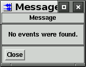 |
|||
|
Synopsis: [WINDOW.]showWarning WARNING_MESSAGE Description: Display the geotool's Warning window with the WARNING_MESSAGE. For example: showWarning "No waveforms selected." |
|||
|
Synopsis: [WINDOW.]textQuestion question=QUESTION [title=TILE] [button1=LABEL1] [button2=LABEL2] [default_response=DEFAULT] [answer=ANSWER] Description: Display a popup window with a question label and a text field into which the answer can be typed. The text field will contain a DEFAULT response, if one is specified. Otherwise, the text field will be blank. Two button are always displayed. The left button label defaults to "Apply" and the right button label defaults to "Cancel". If the left button is selected, the local variable ANSWER will be set to the contents of the text field. If the right button is selected, the local variable ANSWER will be set to an empty string. For example:
textQuestion question="Enter the script filename" default_response="scripts/script1"
if(answer != "")
parse answer
endif
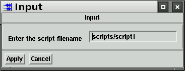 |
|
The following example script demonstrates how to create a new popup window, shown at the right, that contains a Choice component and a List component, both with callback scripts. The popup window contains a list of phases and a choice of "observed" or "predicted". When a phase is selected from the list, the waveforms in the waveform window are aligned on either the observed arrival time or the predicted arrival time of the selected phase. The graphical components are Motif widgets (XmFormDialog, XmRowColumn, etc.). The "args" parameter is used to specify resources for each widget. |
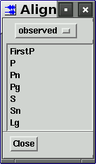 |
View.create name="Align on Phase..." type="Button" # add a button to the View menu
View.align_on_phase.activateCallback="align_popup.open" # the button will open the align_popup
# create a popup window of type FormDialog
create name="align_popup" type="FormDialog" title="Align On Phase"
# create a contain component
align_popup.create name="controls" type="RowColumn" args={
leftAttachment:ATTACH_FORM
leftOffset:5
rightAttachment:ATTACH_FORM
bottomAttachment:ATTACH_FORM
bottomOffset:5
orientation:HORIZONTAL
}
# create a button that will close the window
align_popup.controls.create name="Close" type="Button"
align_popup.controls.Close.activateCallback="align_popup.close"
# create a separator which is a horizontal line
align_popup.create name="sep" type="Separator" args={
leftAttachment:ATTACH_FORM
rightAttachment:ATTACH_FORM
bottomAttachment:ATTACH_WIDGET
bottomWidget:controls
}
# create a Choice component (optionMenu) with two choices
align_popup.create name="choice" type="Choice" choices="observed,predicted" args={
topAttachment:ATTACH_FORM
topOffset:5
leftAttachment:ATTACH_FORM
leftOffset:5
rightAttachment:ATTACH_FORM
}
# The callback for the Choice component. This script is interpreted
# when the choice is changed.
align_popup.choice.activateCallback={
if(align_popup.list.num_selected > 0) # if a phase is selected
if(align_popup.choice.value == "observed") # if the choice is "observed"
align_on_phase phase=align_popup.list.get_selected
else # else the choice is predicted
align_on_predicted_phase phase=align_popup.list.get_selected
endif
endif
}
align_popup.create name="list" type="List" args={
topAttachment:ATTACH_WIDGET
topWidget:choice
topOffset:5
bottomAttachment:ATTACH_WIDGET
bottomWidget:sep
leftAttachment:ATTACH_FORM
leftOffset:5
rightAttachment:ATTACH_FORM
selectionPolicy:SINGLE_SELECT
visibleItemCount:7
itemCount:7
items:FirstP,P,Pn,Pg,S,Sn,Lg
}
# The callback for the List component. This script is interpreted
# when a phase is selected from the List. It is the same callback
# as the Choice callback.
align_popup.list.singleSelectionCallback {
if(align_popup.list.num_selected > 0) # if a phase is selected
if(align_popup.choice.value == "observed") # if the choice is "observed"
align_on_phase phase=align_popup.list.get_selected
else # else the choice is predicted
align_on_predicted_phase phase=align_popup.list.get_selected
endif
endif
}
|
The next example script adds a button to the Edit menu that deconvolves the instrument response from a waveform and convolves the waveform with a different response. The script creates a new button called "Exchange Response" in the Edit menu and creates it's toolbar link called "Exc". A dataChangeCallback script makes the new "Exchange Response" button sensitive only when there are waveforms selected. The sensitivity of the toolbar button is automatically updated.
The activateCallback script for the new button loops over all selected waveforms, deconvolves the recording instrument and convolves the deconvolved waveform with a different instrument response. The Option/History table will display the deconvolution and convolution operations along with the demean and data taper operations that are performed automatically.
# Add a button that deconvolves the instrument response and
# convolves the waveform with a different response.
Edit.create name="Exchange Response" type="button" # add button to the Edit menu
addToToolbar name="Edit.Exchange Response" toolbar_name="Exc" # display in toolbar
edit.exchange_response.setInsensitive # make the button initially insensitive
dataChangeCallback={ # add a callback script to the waveform window
if(sel_wave.size() > 0) # if waveforms are selected, make the
edit.exchange_response.setSensitive # Exchange Response button sensitive
else
edit.exchange_response.setInsensitive # otherwise make it insensitive
endif
}
# define the callback script for the Exchange Response button
Edit.Exchange_Response.activateCallback={
new_inid = 211455 # the inid of the new instrument response
foreach(sel_wave, w) # loop over all selected waveforms
if(w.samprate > 39) # if the sample rate is > 39.
flo = .01 # set the low pass frequency to .01 Hz
else
flo = .1 # otherwise set it to .1 Hz
endif
nyquist = .5*w.samprate
fhi = nyquist - 1. # set the high pass frequency to nyquist - 1
deconvolve w low=flo high=fhi amp_cutoff=-4 # deconvolve the recording response
convolve w inid=new_inid low=flo high=fhi # convolve the new instrument
endfor
}
|
|
This example script demonstrates how to create a popup window with a Table component. The window is shown at the right. The Table component is filled with the station name, channel name and the mean value of each waveform. The script demonstrates the use of the selectRowCallback, which in this case causes the waveform window to zoom-in on the waveform corresponding to the row that is selected. The dataChangeCallback is also used to interpret a script whenever there is a change to the waveforms in the waveform window. It is interpreted each time a waveform is added removed from the window and also each time any waveform is modified or selected. |
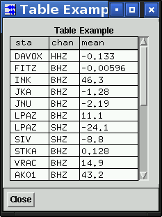 |
create name="Table Example" type="FormDialog" # create a popup window
table_example.create name="controls" type="RowColumn" args={ # create a container for buttons
leftAttachment:ATTACH_FORM
rightAttachment:ATTACH_FORM
bottomAttachment:ATTACH_FORM
orientation:HORIZONTAL
borderWidth: 1
}
table_example.controls.create name="Close" type="Button" # create a button that will
table_example.controls.Close.activateCallback="table_example.close" # close the popup window
table_example.create name="table" type="Table" args={ # create a Table Component
topAttachment:ATTACH_FORM
topOffset:5
bottomAttachment:ATTACH_WIDGET
bottomWidget:controls
bottomOffset: 5
leftAttachment:ATTACH_FORM
leftOffset:5
rightAttachment:ATTACH_FORM
columns:3
singleSelect:True
visibleRows:10
columnLabels:sta,chan,mean
tableTitle:Table Example
width:220
}
# each time a row of the table is selected, this script is interpreted
table_example.table.selectRowCallback {
if(table_example.table.num_sel_rows > 0) # if the number of selected rows > 0
i = table_example.table.sel_row[1].index # the row index is the same as the waveform index
zoom_on_waveform wave[i] # zoom in to display the ith waveform
endif
}
Option.create name="Example1" type="Button" # create a button in the Option menu
# each time the Option/Example1 is selected, this script will be interpreted
Option.Example1.activateCallback={
table_example.table.remove_all_rows # remove all rows from the table
foreach(wave, w) # loop over all waveforms
table_example.table.add_row w.sta w.chan w.mean(%.3g) # add a row for each waveform
endfor
table_example.open # display the popup window
}
# this callback is interpreted whenever there is a change to any waveform,
# ie. when waveforms are read, or deleted, or modified.
# It updates the contents of the table in the popup window.
dataChangeCallback={
table_example.table.remove_all_rows # this is the same script as the previous one
foreach(wave, w)
table_example.table.add_row w.sta w.chan w.mean(%.3g)
endfor
}
|
The arrival and waveform popup menus
|
The script below demonstrates how to add a button to the arrival popup menu that is displayed by a right-mouse-button click on an arrival tag. The arrival popup menu with a new "View" button added is shown at the right. When the View button is selected, a callback script is interpreted that finds the arrival's detection filter band, copies the waveform to a second window, filters the waveform and zooms-in to display 20 seconds of data centered on the arrival. The arrival popup menu is called arrival_menu. In the callback script, the arrival object has the name edit_arrival and the waveform on which the arrival tag is draw has the name edit_wave. Buttons can also be added the waveform popup menu that is displayed by a right-mouse-button click on the waveform tag. The waveform popup menu is called waveform_menu. In a callback script, the waveform whose popup menu is displayed is again called edit_wave. |
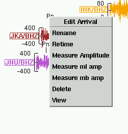 |
# add a button to the arrival popup menu
arrival_menu.create type="button" name="View" position=0
arrival_menu.view.activateCallback={ # the button's callback script
# get the index of the detection recipe for this arrival
set indices = detection_beams.table.find_indices("net", edit_arrival.sta, "name", edit_arrival.chan)
if(indices.size() > 0) # if a detection recipe index was found
copy edit_wave # edit_wave is the waveform that has the arrival tag
2.clear # that displayed the arrival menu
2.paste # copy the waveform to the second waveform window
j = indices[1] # set j = to the first index. normally there is only one index.
alias r = detection_beams.table.row
filter 2.wave[1] low=r[j].flo high=r[j].fhi # filter with the detection recipe frequencies
2.zoom_on_waveform 2.wave[1] # zoom-in vertically to the waveform
tmin = edit_arrival.time - 10.
tmax = edit_arrival.time + 10.
2.time_zoom tbeg=tmin tend=tmax # zoom-in horizontally to the arrival
endif
}
|
This example illustrates how the FK Multi-Band module can be used to detect arrivals. The Auto Compute FK option is used to compute a series of FK's for a sliding five-second time window over three minutes of data from the GERES array. Using a three-second overlap, a total of 87 FK's are computed in each of eight frequency bands. Two FK Multi-Band windows are needed for the eight frequency bands, since each window can compute only four frequency bands at a time.
The FK Multi-Band module automatically computes waveform beams for the azimuth and slowness of the peak amplitude of each FK matrix. A signal-to-noise measurement, short-term-average over long-term-average, is made using a one-second short-term-average time window whose end time is the end time of the FK time window and a sixty-second long-term-average time window whose end time is the start time of the short-term-average window.
After these computations are made, there are eight 87-element signal-to-noise arrays, one for each frequency band. For each signal-to-noise array, local maximum values are found. A local maximum is greater than the preceding two array elements and the following two array elements. All local maximum signal-to-noise values are placed in a detection table. The detection table is sorted by the signal-to-noise values. The waveform beams for the top ten SNR values that are greater than 3.0 are displayed in a separate Waveform Window. An arrival record is created for each of these top ten detections and displayed on the waveform beams.
The detection table displays the SNR value, the arrival index, the frequency band, the azimuth, the slowness, and the time for each detection. A row-select callback script is created that displays the FK that corresponds to the detection time when a row of the detection table is selected.
The figure below shows the waveform set that was used in this example. It is included in the geotool tutorial dataset as the file tutorial/25454488.wfdisc.
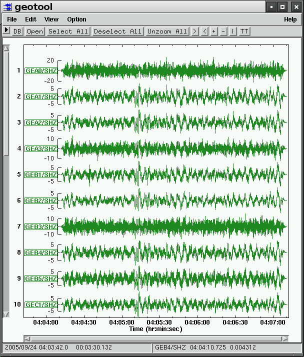
There are two script files for this example. The first one is shown below. It is included in the geotool distribution as the file scripts/detect1. To run this example, parse the file detect1 with the geotool command parse "SOURCE_DIR/scripts/detect1", where SOURCE_DIR is the directory path to the geotool source. Alternatively, the detect1 file can be copied to the home subdirectory ~/.geotool++/scripts/init, and it will be parsed each time geotool is started.
Script detect1 adds the "Detect" button to the Option menu of geotool's waveform window. The callback script for the button parses the second file for this example, scripts/detect2. Copy detect2 to ~/.geotool++/scripts.
Script detect1 also creates a window with a Table component to hold the detection results. The row callback for this table displays the FK's that correspond to each detection.
option.create name="Detect" type="Button" # create the "Detect" button
option.detect.activateCallback={ # when it is selected, the script "detect2" is parsed
# this path is relative to the location of the file "detect1"
parse "../detect2"
}
create name="detections" type="FormDialog" # create a window with a Table component
detections.create name="table" type="Table" args={
columns:9
columnLabels:no.,window,kmax,low,high,snr,azimuth,slowness,time
topAttachment: ATTACH_FORM
leftAttachment: ATTACH_FORM
rightAttachment: ATTACH_FORM
bottomAttachment: ATTACH_FORM
visibleRows: 10
width: 400
}
detections.table.selectRowCallback={ # the table row select callback
if(detections.table.num_sel_rows > 0) # if there is a selected row display the FK
k = detections.table.sel_row[1].kmax # k is the frequency band (1-8)
i = detections.table.sel_row[1].window # i is the time window
if(k <= 4) # frequency bands 1-4 are in the first FK
fk_multi_band.display window=i
fk_multi_band.open
else # frequency bands 5-8 are in the second FK
fk_multi_band.2.display window=i
fk_multi_band.2.open
endif
endif
}
|
The detection window created by scrip1 and filled by scrip2 is shown below. In this example, there were six detections with SNR values greater that 3.0. They are ordered by detection time.
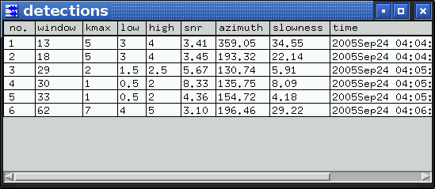
The detection waveform beams are displayed in a second waveform window that is shown below. The arrivals are labeled with integers. The waveform labels display the azimuth and the frequency band limits.
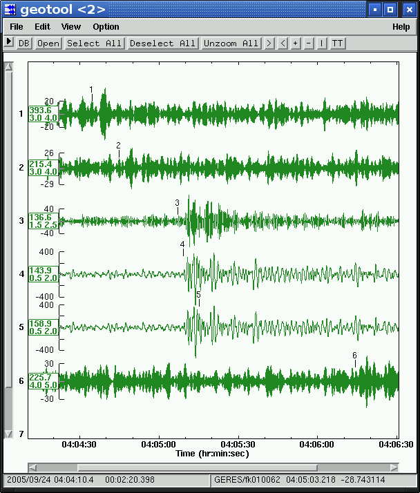
The script file detect2 is shown below. It is parsed each time the "Detect" button is selected. The waveforms should be selected before the Detect button is selected.
if( sel_wave.size() == 0 )
showWarning "No waveforms selected."
return
endif
alias fk = fk_multi_band
# assign the frequency band limits
set lo=0.5,1.5,2.0,2.5,3.0,3.5,4.0,5.0
set hi=2.0,2.5,3.0,3.5,4.0,4.5,5.0,6.0
# set the frequency band limits of the first FK window
fk.flo1=lo[1]; fk.fhi1=hi[1]
fk.flo2=lo[2]; fk.fhi2=hi[2]
fk.flo3=lo[3]; fk.fhi3=hi[3]
fk.flo4=lo[4]; fk.fhi4=hi[4]
# set the parameter values for the first FK window
fk.parameters.window_length=5. # 5 second time window for each FK
fk.parameters.window_overlap=3. # 3 second window overlap
fk.parameters.stav_length=1. # 1 second short-term-average window
fk.parameters.ltav_length=60. # 60 second long-term-average window
fk.auto_compute # compute the FK's for frequency bands 1-4
# set the frequency band limits of the second FK window
fk.2.flo1=lo[5]; fk.2.fhi1=hi[5]
fk.2.flo2=lo[6]; fk.2.fhi2=hi[6]
fk.2.flo3=lo[7]; fk.2.fhi3=hi[7]
fk.2.flo4=lo[8]; fk.2.fhi4=hi[8]
# set the parameter values for the second FK window
fk.2.parameters.window_length=5.
fk.2.parameters.window_overlap=3.
fk.2.parameters.stav_length=1.
fk.2.parameters.ltav_length=60.
fk.2.auto_compute # compute the FK's for frequency bands 5-8
detections.open
detections.table.remove_all_rows
max_detections = 10 # the maximum number of detections allowed
min_snr = 3.0 # the low SNR cutoff
num = 0
n = fk.sig[1].snr.size() - 2
foreach(3, n, i) # loop over the SNR values
kmax = 0
snr_max = 0
foreach(1, 4, k) # loop over the frequency bands of the first FK window
alias s=fk.sig
m = s[k].snr[i]
if(m > min_snr && m > s[k].snr[i-2] && m > s[k].snr[i-1] \
&& m > s[k].snr[i+1] && m > s[k].snr[i+2])
if(m > snr_max)
snr_max = m
kmax = k
azimuth = s[k].azimuth[i]
slowness = s[k].slowness[i]
time = s[k].time[i]
endif
endif
endfor
foreach(1, 4, k) # loop over the frequency bands of the second FK window
alias s=fk.2.sig
m = s[k].snr[i]
if(m > min_snr && m > s[k].snr[i-2] && m > s[k].snr[i-1] \
&& m > s[k].snr[i+1] && m > s[k].snr[i+2])
if(m > snr_max)
snr_max = m
kmax = 4+k
azimuth = s[k].azimuth[i]
slowness = s[k].slowness[i]
time = s[k].time[i]
endif
endif
endfor
# if a local snr maximum was found, add it to the detection table
if(kmax > 0)
num = num + 1
detections.table.add_row num i kmax lo[kmax] hi[kmax] snr_max(%.2f)\
azimuth(%.2f) slowness(%.2f) time(%t)
endif
endfor
n = max_detections
if(n > detections.table.num_rows)
n = detections.table.num_rows
else
# sort the detection table and take the top "n" SNR values
detections.table.sort_down column="snr"
endif
2.clear
2.tag_contents.set tag="text input,filter(low high)"
foreach(1, n, j)
k = detections.table.row[j].kmax
i = detections.table.row[j].window
s = detections.table.row[j].snr
azimuth = detections.table.row[j].azimuth
slowness = detections.table.row[j].slowness
if(k <= 4)
fk.display window=i # display the i'th FK and beam
m = 2*(k-1) + 1 # odd traces are beams, even are ftraces
copy fk.beam_plot.wave[m] # copy the beam to the paste buffer
time = fk.sig[k].time[i]
else
fk.2.display window=i
m = 2*(k-4-1) + 1
copy fk.2.beam_plot.wave[m]
time = fk.2.sig[k-4].time[i]
endif
2.paste # copy the beam to the second waveform window
# set the waveform label
sprint label azimuth(%.1f) slowness(%.1f)
2.tag_contents.set text=label
2.update_tag 2.wave[j]
# create an arrival record. it is written to disk or database
2.add_arrival 2.wave[j] phase=j time=time
endfor
2.arrivals_on_one_channel
2.open
|
The FK window is shown below. It will display the FK's for the detection time window when a detection row is selected in the Detection table.
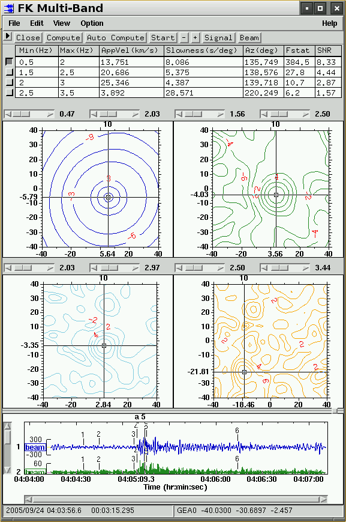
The following commands are available in any window that displays waveforms. For windows other than the first waveform window, prefix the commands with the window name. For example,
select wave[2] # select the second waveform of the first waveform window 2.display_amplitude_scale # display the amplitude scales in the second waveform window fk_multi_band.beam_plot.print_window.print # print beams at the bottom of the FK Multi-Band window correlation.plot2.auto_scale_on # turn auto scale on in the Correlation Traces plot
The prefixes for waveform window commands are:
| command prefix |
window |
| 2. |
the second waveform window |
| 3. |
the third waveform window, etc. |
| arrivals.amp_mag.wplot. |
Amplitude/Magnitudes waveform window |
| calibration. |
Calibration window |
| cluster.all. |
Cluster window All tab |
| cluster.cluster0. |
Cluster window Cluster 0 tab |
| cluster.cluster1. |
Cluster window Cluster 1 tab, etc. |
| correlation.plot1. |
Correlation Reference Trace |
| correlation.plot2. |
Correlation Correlation Traces |
| detection_beams.beams. |
Detection beams window |
| fk.beam_plot. |
FK window beams |
| fk.signal.beam_plot. |
FK Signal window beams |
| fk_multi_band.beam_plot. |
FK Multi-Band window beams |
| fk_multi_band.signal.beam_plot. |
FK Multi-Band Signal window beams |
| multi_channel_cross_correlation.wplot. |
Multi Channel Cross Correlations |
| origin_beams. |
Origin beams window |
| pmcc.wplot. |
Pmcc window waveforms |
| polarization.wplot. |
Polarization window rotated waveforms |
| real_time_display. |
Real Time Display window waveforms |
| spectrogram.wplot. |
Spectrogram window waveform |
The waveform window commands are:
|
Create an arrival. The arrival record is saved to disk or to the database. |
|
|
Align waveforms on time - observed PHASE arrival time. |
|
| Align waveforms on time - predicted PHASE arrival time. |
|
Align waveforms on their first samples. |
|
Align waveforms on time. |
|
Align waveforms on time - predicted first-P time. |
|
Align waveforms on time - observed first-P time. |
|
Do not display the arrivals tags. |
|
Display arrival tags only when the waveform station and channel match the arrival station and channel. |
|
Display arrival tags on all waveform channels when the waveform network matches the arrival station. |
|
Adjust the vertical scale to display all waveforms. |
|
Use current waveform height and waveform separation. |
|
beam azimuth=DEGREES slowkm=SECS/KM or slowdeg=SECS/DEG [low=FREQ] [high=FREQ] [type=TYPE] [order=ORDER] [zp=(true,false)] [replace=(true,false)] | Create a waveform beam from the selected waveforms. The slowness can be entered with slowkm or slowdeg. To specify a filter, use the low and high frequency band limits. TYPE can be "BP", "BR", "LP", or HP". It defaults to "BP". The filter order can be 0 to 10. It defaults to 3. The zero-phase argument zp defaults to false. If replace is false (the default), a new waveform beam is added to the bottom of the waveform window. If replace is true, the last waveform beam that was added to the window will be replaced by this beam. |
beam arrival[i] [selected_only=(true,false)] [replace=(true,false)] | Create a waveform beam using the arrival detection beam recipe. The arrival channel name must be a detection recipe name. If selected_only is false (the default), then all waveforms in the recipe group are included in the beam. If selected_only is true, then waveforms from the recipe group are included only if they are currently selected. If replace is false (the default), a new waveform beam is added to the bottom of the waveform window. If replace is true, the last waveform beam that was added to the window will be replaced by this beam. |
Clear all waveforms and other data from the waveform window. |
|
Display all waveform components of three-component stations. |
|
Display only the z-component of all three-component stations. |
|
Display the n-component and e-component of all three-component stations. |
|
Display only the n-component of all three-component stations. |
|
Display only the e-component of all three-component stations. |
|
convolve [ wave[i] ] [ instrument[j] ] [inid=INID] [low=LOW] [high=HIGH] [data_taper=SECS] [remove_time_shift=(true,false)] |
Convolve an instrument response with the ith waveform. The response is specified with an instrument object instrument[j] or with an INID value. If neither of these parameters is specified, then the instrument that is currently selected in the Instrument Response All Instruments table is used. LOW and HIGH are the frequency limits. SECS is the length of the taper that is applied to each end of the waveform before the convolution (defaults to 5 seconds). If remove_time_shift is true (the default), any time shift caused by the response is removed. (The linear trend in the response phase is removed.) If there is no wave[i] argument, the convolve command operates on all selected waveforms. convolve wave[3] inid=211455 low=0.1 high=15. |
Copy the ith waveform and associated tables to the paste buffer. Copy only samples between TMIN and TMAX, if these limits are specified. If there is no wave[i] argument, the copy command copies all selected waveforms. |
|
Copy the ith waveform and associated tables to the paste buffer. If tmin and tmax are not specified, copy the entire waveform and remove it from the window. Otherwise, copy the waveform between tmin and tmax to the paste buffer and remove that part of the waveform. If there is no wave[i] argument, the cut command operates on all selected waveforms. | |
deconvolve [ wave[i] ] [ instrument[j] ] [inid=INID] [low=LOW] [high=HIGH] [data_taper=SECS] [remove_time_shift=(true,false)] [amp_cutoff=CUTOFF] | Deconvolve an instrument response from the ith waveform. The response is specified with an instrument object instrument[j] or an INID value. If neither of these parameters is specified, then the instrument that is associated with the station and channel of the waveform is deconvolved. LOW and HIGH are the frequency limits. SECS is the length of the taper that is applied to each end of the waveform before the convolution (defaults to 5 seconds). If remove_time_shift is true (the default), any time shift caused by the response is removed. (The linear trend in the response phase is removed.) If there is no wave[i] argument, the convolve command operates on all selected waveforms. The CUTOFF value is the minimum response amplitude, as a fraction of the maximum amplitude, that will be used in the inversion of the response for the deconvolution. The CUTOFF value is input as a negative logarithm value. For example, to limit the response amplitudes to values that are greater than 1.e-06 times the maximum response amplitude, set amp_cutoff = -6. This is the default value. deconvolve wave[3] low=0.1 high=15. |
Remove the ith waveform from the program. |
|
Remove all cursors from the window. |
|
Remove the last crosshair cursor that was drawn. |
|
Remove all selected waveforms from the program. |
|
Remove the last line cursor that was drawn. |
|
Remove the last phase-line cursor that was drawn. |
|
Remove the time-window cursor whose label is LABEL. If LABEL is not specified, remove the 'a' time-window cursor. |
|
Deselect the ith arrival. |
|
Deselect the ith origin. |
|
Deselect the ith waveform. |
|
Deselect waveform by its position from the top starting at one. |
|
Deselect waveforms that match the specified attributes. select sta="AK04" chan="BHZ" |
|
Deselect all waveforms. |
|
Deselect all arrivals. |
|
Display all waveforms that are hidden by "display_selected_only". |
|
Display an amplitude scale on each waveform. (See hide_amplitude_scale) |
|
Multiply the ith waveform by the calib factor. If there is no wave[i] argument, the display_calib command operates on all selected waveforms. |
|
Display the ith waveform in counts. If there is no wave[i] argument, the display_counts command operates on all selected waveforms. |
|
Display only the waveforms that are selected. |
|
Display waveform tags on the waveforms. (See hide_tags) |
|
Display the ith waveform, if only arrivals were original displayed. |
|
filter [ wave[i] ] low=LOW high=HIGH [type=TYPE] [order=ORDER] [zp=ZP] |
Filter the ith waveform. LOW and HIGH are the frequency limits. TYPE is "BP", "BR", "HP", "LP". It defaults to "BP". ORDER is [0-10]. It defaults to 3. ZP is true for zero-phase filter or false for causal. It defaults to false. If there is no wave[i] argument, the filter command operates on all selected waveforms. |
Do not display the amplitude scales on the waveforms. |
|
Do not display waveform tags on the waveforms. |
|
Set the drawing height of waveforms independently. |
|
Do not allow waveform movement with the mouse. |
|
Permit waveform movement with the mouse in the x direction only. |
|
Permit waveform movement with the mouse in the y direction only. |
|
Permit waveform movement with the mouse in both directions. |
|
output wave[i] file=FILE [tmin=TMIN] [tmax=TMAX] [append=(true,false)] [raw=(true,false)] [format=(css,sac,ascii)] [output_tables=(true,false)] [remark=REMARK] | Write the waveform to the file FILE. TMIN and TMAX define a segment to write out. The file will be overwritten if append is false. If raw is true, all modifications to the waveform are removed before it is written, otherwise the current waveform values are written. If output_tables is true, the associated tables, origin, arrival, assoc, etc. are also written. The optional remark is written to as remark record. The defaults are append=true, raw=true, format="css", and output_tables=false. If there is no wave[i] argument, the output command writes out all selected waveforms. |
Scroll the waveform window one scrollbar page-increment down. |
|
Scroll the waveform window one scrollbar page-increment left. |
|
Scroll the waveform window one scrollbar page-increment right. |
|
Scroll the waveform window one scrollbar page-increment up. |
|
Allow partial waveform selection with a left-mouse-button drag. |
|
Paste the contents of the paste buffer. |
|
Position the first sample of the ith waveform at the plot coordinates (x,y). |
|
Position a crosshair cursor at X,Y. NUM is the crosshair index (1-10). If no NUM is specified, the first crosshair, NUM=1, is drawn. If notify is true (the default), cursor callbacks are made. |
|
position_time_window xmin=XMIN xmax=XMAX [label=LABEL] [draw_label=(true,false)] [notify=(true,false)] | Position a time-window cursor at XMIN, XMAX. LABEL is a single lower case character. If no label is specified, the 'a' labeled time-window cursor is drawn. If notify is true (the default), cursor callbacks are made. If draw_label is false (the default is true), the label is not displayed. |
position_line_cursor x=X [label=LABEL] [notify=(true,false)] | Position a vertical line-cursor at X. LABEL is a single upper case character. If no label is specified, the 'A' labeled line-cursor is drawn. If notify is true (the default), cursor callbacks are made. |
Position a vertical phase-line-cursor at X. PHASE is the phase string. If notify is true (the default), cursor callbacks are made. |
|
List the member values of the ith waveform object in the form "member_name=value". |
|
List the member values of the ith TABLE object in the form "member_name=value". print arrival[3] print origin[1] |
|
Print the waveform window |
|
Set one or more printing parameter values. The printing parameters are: For example: print_window.set filename="geotool.ps" command="" # print to a file print_window.set layout="landscape" paper="A4" axes_labels_size=14 line_width=2 print_window.print |
|
Move the selected waveforms to the top of the window. |
|
Display the ith waveform with the normal polarity. (Do not multiply the values by -1.) If there is no wave[i] argument, the normal_polarity command operates on all selected waveforms. |
|
Remove all cursors from the window. |
|
Remove all processing methods that have altered the ith waveform. If there is no wave[i] argument, the remove_all_methods command operates on all selected waveforms. |
|
Remove all convolution and deconvolution operations from the ith waveform. If there is no wave[i] argument, the remove_con_decon command operates on all selected waveforms. |
|
Demean the ith waveform. If there is no wave[i] argument, the remove_mean command operates on all selected waveforms. |
|
Restore the mean to the ith waveform. If there is no wave[i] argument, the restore_mean command operates on all selected waveforms. |
|
Display the ith waveform with the reversed polarity. (Multiply the values by -1.) If there is no wave[i] argument, the reverse_polarity command operates on all selected waveforms. |
|
Rotate the ith waveform and it's associated component waveforms to the specified station-to-source AZIMUTH, and INCIDENCE. The input waveform wave[i] can be any of the three components. The INCIDENCE is measured from vertical and defaults to 90. degrees. AZIMUTH and INCIDENCE are in degrees. If only the horizontal components are available, then the INCIDENCE is forced to be 90. |
|
Decrease the plotting scale for all waveforms. |
|
Increase the plotting scale for all waveforms. |
|
Scroll the waveform window one scrollbar increment down. |
|
Scroll the waveform window one scrollbar increment to the left. |
|
Scroll the waveform window one scrollbar increment to the right. |
|
Scroll the waveform window one scrollbar increment up. |
|
Select the ith arrival. |
|
Select the ith origin. |
|
Select the ith waveform. |
|
Select waveform by its position from the top, starting at one. |
|
Select waveforms that match the specified attributes. select sta="AK04" chan="BHZ" |
|
Select all waveforms. |
|
Select all arrivals. |
|
Select all waveforms that are currently visible in the window. |
|
Select currently visible z-component waveforms. |
|
Select currently visible horizontal component waveforms. |
|
set_axes_labels [x_label=LABEL] [y_label=LABEL] [title=TITLE] |
Set the axes labels and plot title. |
set_current_scale height=PIXELS [selected_only=(true,false)] [visible_only=(true,false)] |
Set the waveform pixel height for all waveforms, or only selected waveform if selected_only is true, or only visible waveforms if visible_only is true. |
Make the current waveform order the default sort order. The command sort_waveforms order="default_order" will display the waveforms in this order. |
|
Set the waveform screen layout. It will also be saved to disk. |
|
Set the working orid. |
|
Sort waveforms vertically by ORDER. sort_waveforms order="default_order" # use the default order sort_waveforms order="file_order" # sort by wfdisc file order sort_waveforms order="distance" # sort by distance sort_waveforms order="time/sta/chan" # sort by time, sta and chan sort_waveforms order="sta/chan" # sort by sta and chan sort_waveforms order="chan/sta" # sort by chan and sta sort_waveforms order="back_azimuth" # sort by back azimuth |
|
Increase the vertical space between waveforms. |
|
Decrease the vertical space between waveforms. |
|
tag_contents.set [tag=TAG] [text=TEXT] [selected_only=(true,false)] | Set the tag contents. If selected_only is true (the default is false), change the tags of selected waveforms only. The TAG is a string list of tag components as they are listed in the Tag Contents popup window. For example: tag_contents.set tag="station,channel,filter(low high)" selected_only=true |
Label the time axis with epochal time values. |
|
Label the time axis as hh::mm::ss.s |
|
Label the time axis in seconds. |
|
Label the time axis in seconds, minutes, or hours. |
|
time_window [arid=NUM] [lead=SECS] [lag=SECS] [phase=PHASE] [tbeg=TIME] [tend=TIME] [duration=SECS] [letter=LETTER] | Position a time-window cursor. If LETTER is not specified, position the 'a' time-window cursor. The limits of the time-window can be specified with either the arid, the phase, or tbeg and tend or duration. The lead defaults to 1.0 seconds and the lag defaults to 4.0 seconds. If phase is specified, the first arrival with that phase name is used for the time window. time_window arid=34259 lead=5. lag=10. time_window tbeg=1237836841.04 duration=10. time_window tbeg="2009Mar23 19:34:01.04" duration=30. time_window tbeg=1237836841.04 tend=1237837390. time_window phase="P" lead=2 lag=5 |
time_zoom [arid=NUM] [lead=SECS] [lag=SECS] [phase=PHASE] [tbeg=TIME] [tend=TIME] [duration=SECS] | Set the plot time limits. The plot limits can be specified with either the arid, the phase, or tbeg and tend or duration. The lead default to 1.0 seconds and the lag defaults to 4.0 seconds. If phase is specified, the first arrival with that phase name is used to set the plot limits. |
Allow only total waveform selection with the mouse. |
|
Remove the last filter applied to the ith waveform. |
|
Remove the last filter applied to the each waveform. |
|
Draw all waveforms using the same vertical scaling. |
|
Unrotate the ith waveform and it's associated component waveforms. |
|
Zoom-out to the previous plot limits. |
|
Display the plot with the original limits. |
|
Display the plot with the original x limits. |
|
Display the plot with the original y limits. |
|
Update the tag of ith waveform. This would normally be called after making changes to the tag contents with the tag_contents commands. |
|
Set the waveform color code and/or the color values. The CODE can be "uniform", "unique", "station", "channel", "network", or "origin". The COLORS is a list of color names or red,green,blue values. waveform_color code="network" waveform_color colors="sky blue,orange,189,85,214,red,173,48,99" A change in the CODE value will effect the current waveforms. A change in the COLORS will not effect waveforms that are currently displayed. It will effect all subsequent waveforms. The color settings are saved to disk. |
|
zoom xmin=XMIN xmax=XMAX ymin=YMIN ymax=YMAX [remember=(true,false)] |
Display the plot with the specified x and y limits. If remember is true (the default is false), then this zoom will be saved in the zoom-stack, which means that a subsequent zoom and unzoom will return to these limits. |
Zoom-in to display only the ith waveform. If there is no wave[i] argument, the zoom_on_waveform command zooms to display all selected waveforms |
The following variables are available in any window that displays waveforms. For windows other than the first waveform window, prefix the variable name with the window name. For example,
print time_window[1].tmin time_window[1].duration copy fk_multi_band.beam_plot.wave[1] print tablequery.arrival[1] x = correlation.plot2.time_window[1].tmin
The waveform window variables are listed below. Array indices always start at 1.
|
The ith crosshair object. Members are crosshair[i].x and crosshair[i].y. |
|
The ith line cursor object. Members are line_cursor[i].x and line_cursor[i].label. |
|
The number of crosshair cursors that are displayed. |
|
The number of line cursors that are displayed. |
|
The number of phase-line cursors that are displayed. |
|
The number of time-window cursors that are displayed. |
|
The ith phase-line cursor object. Members are phase_line[i].x and phase_line[i].label. |
|
The maximum x value (time) of the plot. |
|
The minimum x value (time) of the plot. |
|
The maximum y value of the plot. |
|
The minimum y value of the plot. |
|
The ith selected table object, where TABLE is a CSS table name such as arrival, origin, etc. |
|
The number of selected table objects in the array. |
|
The ith selected waveform. |
|
The number of selected waveforms. |
|
The ith table object, where TABLE is a CSS table name such as arrival, origin, etc. |
|
The number of selected table objects. |
|
The ith time-window cursor object. Members are time_window[i].tmin, time_window[i].tmax, and time_window[i].duration. |
|
The ith waveform. |
|
The number of waveforms. |
There are two different types of window components that display tabular data, the Table component and the CSSTable component. The Table component is the more general type. The column names are specified and then rows are added with the add_row command. The CSSTable type is a subclass of Table that displays database table objects. The CSSTable component automatically displays all members of a table object as table columns. Options are available to restrict the object members that are displayed. The format can be also be specified for each table object member.
|
The number of rows in the table. |
|
|
The number of columns in the table. |
|
|
The number of selected rows. |
|
|
The number of selected columns. |
|
|
The ith row as a comma-delimited string. The two-argument foreach command will operate on the rows of a table. For example:
foreach(plugins.table.row, r)
print r.name
endfor
|
|
|
The ith column as a comma-delimited string. For example: set s = table_name.column[i] foreach(s) ... endfor |
|
|
The cell value for the ith row and jth column. |
|
|
A cell value from the ith row. |
|
|
The ith selected row as a comma-delimited string. The two-argument foreach command will operate on the selected rows of a table.
foreach(origin_beams.table.sel_row, r)
print r.net
endfor
|
|
|
A column value from the ith selected row. |
The CSSTable component is a subclass of the Table component, so all of the commands and variables listed above for the Table component are also valid for the CSSTable component. In addition, the following commands and variables are used with the CSSTable component.
|
Add a row to the table. |
|
|
Remove all records from the table. Remove the column labels. |
|
|
Redisplay the table. |
|
|
Remove all records from the table. Keep the column labels. |
|
|
Select a row. |
|
|
set_type table=TABLE_TYPE [extra="NAME1,FORMAT1,NAME2,FORMAT2,..."] [display_list="MEMBER1,MEMBER2,..."] |
Set the type of a new CSSTable. TABLE_TYPE is one of the database table object names. The extra argument can be used to add additional columns to the table. The display_list argument can be used to specify a subset of the table members to be displayed. If it is not used, all of the members of the table object will be displayed as columns. |
|
Return the table type. |
There are several command line arguments that add to the versatility of the program. The '-i' argument runs the program without graphics. The 'parse=' argument inputs initial scripting commands. The 'window=' argument causes a window other than the waveform window to be displayed first. The initialization script INSTALLATION_DIR/scripts/init/cmdline provides a means of defining and processing any number of additional command line arguments.
The command line argument -i causes the program to run without displaying the graphical interface. All scripting commands are processed as if the interface were visible. This mode of execution can be used to generate output when no user interaction with the interface is needed. For example, the following script reads some waveforms, filters the waveforms, and writes a PostScript file of the waveform window.
geotool -i <<$ read "data/tutorial/25454488.wfdisc" select_all filter low=0.5 high=3.0 print_window.set command="" filename="geotool.ps" print_window.print quit $ |
A second example reads a file that can be in CSS, SAC, GSE or ASCII format and converts the data to the requested format.
geotool -i <<$ read "DBIC.BHE.2.sac" select_all output file="DBIC.wfdisc" append=false output_tables=true format="css" quit $ |
All command line arguments can be referenced as variables in the geotool scripting language. For example, the script above could be rewritten to obtain the input file, the output file, and other arguments from the command line as:
geotool -i in="DBIC.BHE.2.sac" out="DBIC.wfdisc" append=false tables=true format="css" <<$ read in select_all output file=out append=append output_tables=tables format=format quit $ |
Taking this one step further, the script could be encapsulated within a shell sh script. If a file named "gconvert" is created with the lines shown below, then the format conversion task can be achieved with the single line
sh gconvert in="DBIC.BHE.2.sac" out="DBIC.wfdisc" tables=true
The file "gconvert" is:
#!/bin/sh
# usage: gconvert in= out= [append=(true,false)] [tables=(true,false)] [format=(css,sac,ascii)]
# execute geotool with the no-graphics '-i' option
# pass geotool the arguments from this sh script: '$*'
# redirect the standard input to read the geotool script commands
geotool -i $* <<%
if( !defined(in) )
print "missing argument 'in='"
quit
endif
if( !defined(out) )
print "missing argument 'out='"
quit
endif
if( !defined(append) )
setb append=false
endif
if( !defined(format) )
set format="css" # this is the output format
endif
if( !defined(tables) )
set tables=false
endif
read in
select_all
output file=out append=append output_tables=tables format=format
quit
|
The 'parse=' command line argument can be used to instruct the program to parse a file or to parse a command string. This command line argument can be used with or without the '-i' argument. The 'parse=' argument can also be used repeatedly, in which case the arguments are processed from left to right. Other arguments will be available to the geotool script within the 'parse=' file. For example, if the file 'ex1' contains the lines
read in select_all sort_waveforms order="distance" filter low=low high=high deselect_all
then the following command will read the waveforms, apply the sort and the filter, and then wait for user interaction as usual:
geotool in=25454488.wfdisc low=2.0 high=4.0 parse=ex1
The 'window=' command line argument causes the program to begin by opening the specified window instead of the waveform window. To allow the user to access other parts of the geotool interface after the initial window is displayed, two buttons are added to the initial window's File menu. The button "Waveform Window..." will display the waveform window that is normally the first window. The button "Open Database..." will display the TableQuery window. For example, the command
geotool window=ft
displays the FT window first. The two buttons are added to the FT/File menu as shown below:
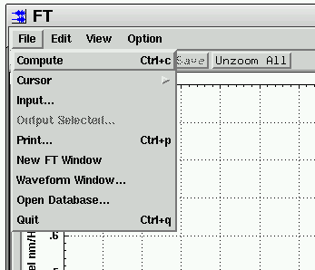
An example usage the 'window=' argument, would be to view and edit table files, in which case the waveform display is not needed. For example, the following command reads all table files with the prefix "DPRK_reduced" into the TableViewer window.
geotool window=tableviewer parse="tv.open_file='data/tutorial/DPRK_reduced'"
Similarly, the results of a database query to get all tables associated with an orid can be displayed in the TableQuery window with a command like
geotool window=tablequery parse="connect data_source='ORACLE' user='reb' password='reb'" \ parse="query 'origin' 'select * from origin where orid=2316236'" parse="get_aaow tq.origin[1]"
The 'window=' command line argument can also be used to display a specific analysis window. For example, the following command reads waveforms from a file, selects a 5-second segment of the first waveform at an arrival time for a reference trace, enlarges the time window, and performs a cross-correlation of the reference trace with all of the waveforms.
geotool window=correlation parse="read 'data/tutorial/25454488.wfdisc'; select_all; filter low=.5 high=3." \ parse="position_time_window xmin=arrival[1].time-1. xmax=arrival[1].time+4.; deselect_all; select 1" \ parse="correlation.set_reference; select_all" \ parse="position_time_window xmin=arrival[1].time-10. xmax=arrival[1].time+10.; correlation.correlate"
The window created by this command is shown below.
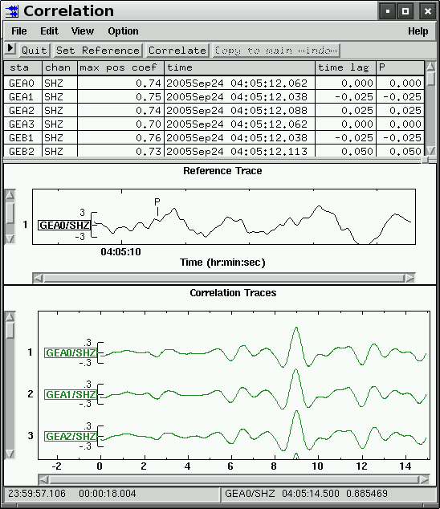
The following windows can be displayed first with the 'window=' command line argument:
geotool window=open_file geotool window=tablequery geotool window=tablequery.connection geotool window=preferences geotool window=arrival_parameters geotool window=amplitude_parameters geotool window=output_window geotool window=print_window geotool window=print_window.print_options geotool window=plugins geotool window=table_files geotool window=tableviewer geotool window=waveform_setup geotool window=data_qc geotool window=filter geotool window=polarization_filter geotool window=rotation geotool window=data_values geotool window=amplitude_scale geotool window=tag_contents geotool window=waveform_color geotool window=arrivals geotool window=arrivals.amplitudes_magnitudes geotool window=arrivals.measure_amp_per geotool window=create_beam geotool window=detection_beams geotool window=origin_beams geotool window=detection_beams.beam_groups geotool window=origin_beams.beam_groups geotool window=origins geotool window=calibration geotool window=cepstrum geotool window=cluster geotool window=correlation geotool window=fk geotool window=fk.signal geotool window=fk_multi_band geotool window=fk_multi_band.signal geotool window=ft geotool window=hilbert_transform geotool window=method_history geotool window=locate_event geotool window=map geotool window=multi_channel_cross_correlation geotool window=origins geotool window=particle_motion geotool window=pmcc geotool window=polarization geotool window=real_time_display geotool window=instrument_response geotool window=spectrogram geotool window=stalta geotool window=travel_times geotool window=waveform_tables
The script file INSTALLATION_DIR/scripts/init/cmdline is automatically read when geotool begins. This script provides some additional command line arguments for specifying the initial data to be read and processed.
Command line arguments for reading prefixed files are:
prefix= |
a file path and prefix. For example: "data/tutorial/DPRK_reduced". A complete filename, such as "data/tutorial/DPRK_reduced.wfdisc" or "data/tutorial/DPRK_reduced.origin" can also be used. Any suffix (.wfdisc, .origin, etc) is ignored. |
sta= |
one or more station names, separated by commas |
chan= |
one or more channel names, separated by commas |
Command line arguments for reading from a database are:
odbc_source= |
an ODBC data source |
odbc_user= |
the database login user name |
odbc_password= |
the database login password |
sta= |
one or more station names, separated by commas |
chan= |
one or more channel names, separated by commas |
net= |
the network name |
lead= |
a lead time in seconds before the arrival time or the input time (default=5.0) |
lag= |
a lag time in seconds after the arrival time or the input time (default=10.0) |
arid= |
an arrival arid |
exclude= |
one or more station names to exclude |
time= |
a time string or epochal time value |
The data source is specified with either the 'prefix' argument or the three ODBC arguments 'odbc_source', 'odbc_user', and 'odbc_password'. For prefixed files, the entire waveform is read for each sta/chan specification. For ODBC data, a segment of the waveform is read. The time limits of the segment are determined from the arid argument or the time argument.
If the 'window=' command line argument is used, the window's compute method will be called, if it has one. Some examples that read data from prefixed files are:
geotool prefix=data/tutorial/DPRK_reduced # read all waveforms in the file geotool prefix=data/tutorial/DPRK_reduced chan=sz # read all "sz" waveforms geotool prefix=data/tutorial/DPRK_reduced sta=FIA0,NV07,PD01 chan=sz # read three stations geotool window=spectrogram prefix=data/tutorial/TURKEY sta=MLR chan=SHZ # read and compute a spectrogram geotool window=ft prefix=data/tutorial/TURKEY sta=MLR chan=SHZ # read and compute an FT
When the arid is used to get data from the database, all the stations in the network are read, unless restricted with the sta and chan arguments. If the arid is not known, then the time and net arguments can be used. Some examples are:
# read array data using an arid and compute an FK geotool window=fk_multi_band odbc_source=ORACLE odbc_user=reb odbc_password=reb arid=15833631 chan=sz # read array data using a time value and compute an FK geotool window=fk_multi_band odbc_source=ORACLE odbc_user=reb odbc_password=reb time=1076162144.9 net=FINES chan=sz # use the exclude argument to exclude some stations geotool window=fk_multi_band odbc_source=ORACLE odbc_user=reb odbc_password=reb arid=15833631 chan=sz exclude=FIA0,FIA3,FIB1
The script file INSTALLATION_DIR/scripts/init/cmdline that processes these command line arguments is shown below. It can be edited to change the behavior.
# file scripts/init/cmdline
# process command line arguments
alias tq = tablequery
if( defined(prefix) ) # if the prefix argument is used
connect prefix=prefix
get_all_tables # read all of the prefix.table files
tq.select_tab="wfdisc"
if( defined(sta) && defined(chan) ) # if both sta and chan are used
foreach(tq.wfdisc.row, r) # loop over wfdiscs and select for sta and chan
i = for_index
foreach(sta)
foreach(chan)
if(r.sta ~= sta && r.chan ~= chan)
tq.select_row i # select this wfdisc is sta and chan match
endif
endfor
endfor
endfor
else if( defined(sta) ) # if only sta is specified
foreach(tq.wfdisc.row, r) # loop over wfdiscs
i = for_index
foreach(sta)
if(r.sta ~= sta)
tq.select_row i # select this wfdisc is sta matches
endif
endfor
endfor
else if( defined(chan) ) # if only chan is specified
foreach(tq.wfdisc.row, r) # loop over wfdiscs
i = for_index
foreach(chan)
if(r.chan ~= chan)
tq.select_row i # select this wfdisc is chan matches
endif
endfor
endfor
else
tq.select_all # neither sta nor chan are specified, select all wfdiscs
endif
tq.display_waveforms # read the waveforms into the waveform window
if( defined(window) && wave.size() > 0)
select_all # if the 'window=' argument is used, select all waveforms
set cmd = window ".compute" # if window=ft, this will be 'ft.compute'
parse_string cmd # and compute
endif
return # all done if prefix argument was used
# if the odbc arguments are specified
else if( defined(odbc_source) || defined(odbc_user) || defined(odbc_password) )
# check for missing arguments
if( !defined(odbc_source) )
showWarning "missing command line argument 'odbc_source'"
return
else if( !defined(odbc_user) )
showWarning "missing command line argument 'odbc_user'"
return
else if( !defined(odbc_password) )
showWarning "missing command line argument 'odbc_password'"
return
endif
# make the odbc connection
connect data_source=odbc_source user=odbc_user password=odbc_password
else
return # no 'prefix' nor odbc arguments
endif
alias tqcon = tablequery.connection
if( !defined(lead) )
lead = 5 # default lead
endif
if( !defined(lag) )
lag = 10 # default lag
endif
if( defined(arid) ) # if the 'arid=' argument is used
# use the Database Connection arrival tab interface which
# will automatically form the queries based on an arid
tqcon.arrival.arrival_id=arid
if( lead < 60. )
tqcon.arrival.time_before=60.
else
tqcon.arrival.time_before=lead
endif
if( lag < 120. )
tqcon.arrival.time_after=120.
else
tqcon.arrival.time_after=lag
endif
tqcon.arrival.stations=""
tqcon.arrival.channels=""
if( defined(sta) )
tqcon.arrival.stations=sta
endif
if( defined(chan) )
tqcon.arrival.channels=chan
endif
tqcon.arrival.return_origins=true
tqcon.arrival.return_wfdiscs=true
tqcon.arrival.run_query
tq.select_tab="wfdisc"
tq.select_all
if( defined(exclude) )
set s = '{' exclude '}'
tablequery.deselect_row sta=s
endif
tq.display_waveforms
foreach(arrival, a) # loop over arrival to find the arid
if(a.arid == arid)
# position the time-window cursor in the waveform window
position_time_window xmin=a.time-lead xmax=a.time+lag
break
endif
endfor
else if( defined(time) ) # if 'time=' argument is used
time = epoch(time)
# use the Database Connection time tab interface which
# will automatically form the queries based on time
if( lead < 60. )
tqcon.time.start_time=time-60.
else
tqcon.time.start_time=time-lead
endif
if( lag < 120. )
tqcon.time.end_time=time+120.
else
tqcon.time.end_time=time+lag
endif
tqcon.time.stations=""
tqcon.time.channels=""
tqcon.time.network=""
if( defined(sta) )
tqcon.time.stations=sta
endif
if( defined(chan) )
tqcon.time.channels=chan
endif
if( defined(net) )
tqcon.time.network=net
endif
tqcon.time.return_origins=true
tqcon.time.return_arrivals=true
tqcon.time.return_wfdiscs=true
tqcon.time.run_query
tq.select_tab="wfdisc"
tq.select_all
if( defined(exclude) )
set s = '{' exclude '}'
tq.deselect_row sta=s
endif
tq.display_waveforms
# position the time-window cursor in the waveform window
position_time_window xmin=time-lead xmax=time+lag
else
return
endif
if( defined(window) && wave.size() > 0)
select_all
set cmd = window ".compute"
parse_string cmd
endif
|
Interprocess messages can be handled by scripts. The command add_message_handler specifies a callback script that is interpreted whenever a message of a particular type is received. The parameters that are contained in the message line as name=value assignments are available as global variables in the callback script. The command send_message will send a message to another process.
|
Synopsis: add_message_handler msg_id=MSG_ID callback=SCRIPT_COMMAND. Description: Specify a script command that will be interpreted whenever a message of type MSG_ID is received. The SCRIPT_COMMAND is typically a parse command. For example: add_message_handler msg_id="ARSspectro" callback="parse ../spectro" |
|
|
Synopsis: send_message dest=DESTINATION msg_id=MSG_ID msg=MESSAGE class=CLASS. Description: Send a message to the specified destination. For example: send_message dest="ARS" msg_id="CallScheme" msg='(update-arrival-par-list "arid=183571 phase=P")' class="geotool" |
The initialization file "INSTALLATION_DIR/scripts/init/messages" contains add_message_handler commands. All files in this directory are ready once when the program begins. The "messages" file is shown below.
# file scripts/init/messages
# process IPC messages
add_message_handler msg_id="ARSspectro" callback="parse ../spectro"
add_message_handler msg_id="ARSft" callback="parse ../spectro"
add_message_handler msg_id="ARSfk" callback="parse ../fk"
# send rename and retime arrival messages
modified_table_cb={
if(modified_table.tableName == 'assoc')
if(phase_modified)
sprintf s '(update-arrival-par-list "arid=' modified_table.arid \
' phase=' modified_table.phase '")'
send_message dest="ARS" msg_id="CallScheme" msg=s class="geotool"
endif
else if(modified_table.tableName == 'arrival')
if(iphase_modified)
sprintf s '(update-arrival-par-list "arid=' modified_table.arid \
' phase=' modified_table.iphase '")'
send_message dest="ARS" msg_id="CallScheme" msg=s class="geotool"
endif
if(time_modified)
sprintf s '(update-arrival-par-list "arid=' modified_table.arid \
' time=' modified_table.time(%.3f) '")'
send_message dest="ARS" msg_id="CallScheme" msg=s class="geotool"
endif
endif
}
# send delete arrival message
deleted_table_cb={
if(modified_table.tableName == 'arrival')
sprintf s '(delete-arrival (car (string->arrivals "' \
modified_table.arid '")))'
send_message dest="ipcc_test" msg_id="CallScheme" msg=s class="geotool"
endif
}
# send add table messages
add_table_cb={
if(modified_table.tableName == 'arrival')
sprintf s '(add-arrival arid="' modified_table.arid '")'
send_message dest="ARS" msg_id="CallScheme" msg=s class="geotool"
else if(modified_table.tableName == 'assoc')
sprintf s '(add-assoc arid="' modified_table.arid \
' orid=' modified_table.orid '")'
send_message dest="ARS" msg_id="CallScheme" msg=s class="geotool"
else if(modified_table.tableName == 'origin')
sprintf s '(add-origin orid="' modified_table.orid '")'
send_message dest="ARS" msg_id="CallScheme" msg=s class="geotool"
endif
# etc.
}
|
It is possible to add commands and predefined variables to the geotool scripting language through a shared library plug-in interface. Geotool loads shared libraries that are in the installation subdirectory lib/plugins and also libraries that are in the home subdirectory ~/.geotool++/plugins. The geotool distribution comes with an example plug-in library called libgscript that can be used as a template for adding new commands and variables to the scripting language. This library is compiled and installed with the other geotool plug-in libraries.
All commands that start with "gsc." are processed by libgscript. The library only recognizes two commands, "cmd1" and "cmd2". The following script
read file="../../data/tutorial/TURKEY.wfdisc" gsc.cmd1 wave[4] low=0. high=3. length=250
produces the output
wave = MLR/SHZ 1051748945.90 low=0 high=3 length=250
The second command
gsc.cmd2
produces the output
INK/BHZ 68.31 -133.53 CMG-3E INK/BHN 68.31 -133.53 CMG-3E INK/BHE 68.31 -133.53 CMG-3E MLR/SHZ 45.49 25.94 S-13 MLR/SHN 45.49 25.94 S-13 MLR/SHE 45.49 25.94 S-13 VRAC/BHZ 49.31 16.59 STS-2 VRAC/BHN 49.31 16.59 STS-2 VRAC/BHE 49.31 16.59 STS-2 HFC2/HHE 60.13 13.69 STS-2 HFC2/HHN 60.13 13.69 STS-2 HFC2/HHZ 60.13 13.69 STS-2 GED1/SHE 48.85 13.71 GS-13 GED1/SHN 48.85 13.71 GS-13 GED1/SHZ 48.85 13.71 GS-13 FIA0/se 61.44 26.08 S-13 FIA0/sn 61.44 26.08 S-13 FIA0/sz 61.44 26.08 S-13
The gsc.cmd2 also computes the average amplitude of the waveforms which is accessible as a variable array "a". The print command
print gsc.n gsc.b gsc.c gsc.a[1](%.2f) gsc.a[2](%.2f)
produces the output
45 3.67 89.1 62.35 28.23
The library is composed of two files, plugins/libgscript/script.h and plugins/libgscript/script.cpp. These two files are show below.
|
The include file script.h is shown at the right. It contains the declaration of the gscriptPlugin class. The constructor method initializes some example variables, the double array a[20], the double variable b, the float variable c, and the int variable n. The virtual methods parseCmd() and parseVar() are the interface to the geotool command parsing module. They are called to process commands that are directed to this library. The method parseCmd() is called to process commands and the method parseVar() is called to get variable values. |
plugins/libgscript/script.h
|
|
|
plugins/libgscript/script.cpp
|
|
|
|
|
|
|
When a waveform is an argument, as in "gsc.cmd2 wave[4] ...", the cmd string passed to this method has the argument "_wave_=ID", where ID is a unique id number. This example method does not actually use the command arguments, but simply prints them along with the waveform sta, chan, and time. |
|
|
|
|
|
|
|
The parseVar method is called to evaluate variables whose name begins with "gsc.". This parseVar method evaluates the variables gsc.b, gsc.c, gsc.n and the array gsc.a[]. The parseArray() method returns true if the input name is the array a[]. It parses the array index and returns the requested value. All double variables are converted to strings using the ".15g" format. All float variables are converted to strings using the ".7g" format. |
|
The functions listed below are useful for parsing arguments and array indices from the input strings to the parseCmd and parseVar method.
bool parseArray(const char *name, const char *array_name, int max_ndex, (int,float,double) *array, char *value, int value_len, ParseVar *ret) (in) name the requested array name (in) array_name this array name (in) max_index the maximum allowed index (starting at 1) (in) array the float array (out) value the returned value (an int, float or double pointer) (in) value_len the size of value (out) ret the return code Returns true if array_name matches name |
bool parseArrayIndex(const char *name, const char *array_name, int max_ndex, int *ndex,
char **next_char, char *value, int value_len, ParseVar *ret)
(in) name the requested array name
(in) array_name this array name
(in) max_index the maximum allowed index (starting at 1)
(out) ndex the index found
(out) next_char the character after the bracket ']'
(out) value for error messages
(in) value_len the size of value
(out) ret the return code
Returns true if array_name matches name
|
char * parseGetArg(const char *cmd, const char *argname)
(in) cmd the command string
(in) arg_name the argument name
Returns the argument value or NULL if it is not found
|
bool parseGetArg(const char *cmd, const char *cmd_name, char *msg, int msg_len,
const char *argname, (int,long,double,bool) *value)
(in) cmd the command string
(in) arg_name the argument name
(out) value the argument value (an int,long,double or bool pointer)
Returns true if argname was found and the value parse successfully read
|
Some of the DataSource class functions for accessing waveforms and tables are listed below. Prefix each function call with "ds->" inside the parseCmd and parseVar methods.
int getWaveforms(CPlotDataClass ***cd_list) (out) cd_list an allocated array of CPlotDataClass objects Returns the number of objects in cd_list[] Get the CPlotDataClass objects for waveforms that are displayed |
CPlotDataClass *getWaveform(int id) (in) id the id of the waveform Returns a CPlotDataClass object or NULL Get the CPlotDataClass object for the specified id |
int getSelectedWaveforms(CPlotDataClass ***cd_list) (out) cd_list an allocated array of CPlotDataClass objects Returns the number of objects in cd_list[] Get CPlotDataClass objects for all selected waveforms |
int copySelectedWaveforms(GTimeSeries ***ts_list) (out) ts_list an allocated array of GTimeSeries objects Returns the number of objects in ts_list[] Get cloned GTimeSeries objects for selected waveforms Free space with ts_list[i]->deleteObject and free(ts_list) |
int getSelectedWaveforms(const char *cursor_label, CPlotDataClass ***cd_list) (in) cursor_label the character label of the time window (out) cd_list an allocated array of CPlotDataClass objects Returns the number of objects in cd_list[] Get CPlotDataClass objects for selected waveforms within a window |
int getSelectedComponents(int **num_cmpts, CPlotDataClass ***cd_list) (out) num_cmpts the number of components (2 or 3) in each group (out) cd_list an allocated array of CPlotDataClass objects Returns the number of groups (elements in num_cmpts) Get CPlotDataClass objects for selected components |
long getWorkingOrid(void) Returns the working orid or -1 if none is set |
void setWorkingOrid(long orid, bool do_callback=true) (in) orid the new working orid (in) do_callback if true, do a DataChange callback Set the working orid |
int getArrivalsOnWaveform(CPlotDataClass *cd, CssArrival **arrivals) (in) cd the CPlotDataClass object for the waveform (out) arrivals an allocated array of CssArrival objects Returns the number of objects in arrivals[] Get the arrivals that are associated with the waveform |
Vector getVTable(const char *cssTableName, bool copy=true) (in) cssTableName the table name (in) copy if true, allocate a new Vector for return. if false, return an internal Vector Returns a Vector or NULL Get a Vector of CssTable objects |
int getTable(const char *cssTableName, CssTable **table) (in) cssTableName the table name (out) table an allocated array of objects Returns the number of elements in the table array Get an array of CssTable objects |
Vector getSelectedVTable(const char *cssTableName) (in) cssTableName the table name Returns a Vector or NULL Get a Vector of selected CssTable objects |
int getSelectedTable(const char *cssTableName, CssTable **table) (in) cssTableName the table name (out) table an allocated array of objects Get an array of selected CssTable objects Returns the number of elements in the table array |
The scripting language can be used to confirm that geotool's data analysis options work and give the same results. The "bin" subdirectory of the geotool installation directory contains a shell script called "test_geotool". This script executes geotool for each geotool script in the directory test/test_scripts. Each test script reads waveform data from the test/test_data directory and compares processing results to "reference" numerical values. The test_geotool script looks like:
#!/bin/sh
# this script executes geotool from the test/test_scripts directory for each
# test script in that directory
cd /home/user/geotool/install/test/test_scripts
for script in `ls`
do
/home/user/geotool/install/bin/geotool -i data_dir=../test_data parse=$script parse="quit"
if [ $? -ne 0 ]
then
echo parse $script failed
fi
done
The script prints the results of each test, for example:
filter test 1 OK filter test 2 OK filter test 3 OK filter test 4 OK filter test 5 OK filter test 6 OK filter test 7 OK filter test 8 OK fkm test 1 OK fkm test 2 OK fkm test 3 OK fkm test 4 OK ...
The "-i" geotool command line argument instructs the program to run without displaying the graphical interface. The "parse=" command line arguments are processed by the command interpreter. Other command line arguments that are assignments, such as "data_dir=../test_data" become global variables within the geotool scripts.
The geotool test scripts in the subdirectory "test/test_scripts" perform operations such as filtering, creating beams, creating an FK or an FT, etc., and compare the results to "reference" values. The technique used in the geotool test scripts is to compare only a few "randomly" selected values. For example the script "test_scripts/beam", that tests the operation of the beam command, compares the beam waveform sample values to reference values:
if( defined(data_dir) )
set data_file=data_dir+"/ASAR.wfdisc"
else
print "data_dir is not defined"
return
endif
clear
read file=data_file query="select * from wfdisc where sta like 'AS' and chan='SHZ'"
select_all
# create a beam using the following parameters
create_beam.slowness_units="s/deg"
create_beam.slowness=23.3
create_beam.azimuth=185.8
create_beam.beam_filter="on"
create_beam.low=1.5
create_beam.high=4.5
create_beam.order=3
create_beam.type="BP"
create_beam.constraint="causal"
create_beam.replace=true
create_beam.beam
n = wave.size() # the index of the beam
set i=45,135,859,994,1124,1525,1623,1835
set d=0.01661496,0.0007423827,-0.1012674,-0.1551854,-0.05387467,-0.003696998,0.2082569,0.08003435
setb ok=true
foreach(i)
if(wave[n].seg[1].data[i] != d[for_index]); setb ok=false; endif
endfor
if( ok ); print "create_beam test 1 OK"
else; print "create_beam test 1 failed"; endif
beam azimuth=173.2 slowdeg=6.3 low=1.0 high=4.0 order=3 type="BP" zp=false replace=true
set d=-0.001097006,0.164435,-0.1144192,-0.1414144,0.1020931,-0.02389313,0.001157728,0.06933046
setb ok=true
foreach(i)
if(wave[n].seg[1].data[i] != d[for_index]); setb ok=false; endif
endfor
if( ok ); print "create_beam test 2 OK"
else; print "create_beam test 2 failed"; endif
# create a beam using a detection beam recipe (the arrival chan name)
beam arrival[1]
n = wave.size() # the index of the beam
set d=0.0004404376,0.009503013,-0.04740897,-0.1230098,-0.001075833,-0.06694256,-0.0841963,-0.05477715
setb ok=true
foreach(i)
if(wave[n].seg[1].data[i] != d[for_index]); setb ok=false; endif
endfor
if( ok ); print "create_beam test 3 OK"
else; print "create_beam test 3 failed"; endif
|
Similarly, the script "test_scripts/fkmulti", that tests the operation of the FK Multi-Band window, compares several values of the FK matrix to reference values and compares values from the snr, fstat, appvel, slowness, and azimuth arrays to references values.
if( defined(data_dir) )
set data_file=data_dir+"/ASAR.wfdisc"
else
print "data_dir is not defined"
return
endif
clear
read file=data_file query="select * from wfdisc where sta like 'AS' and chan='SHZ'"
time_window phase="P" lead=5 lag=10
select_all
alias fkm=fk_multi_band
fkm.flo1=0.5; fkm.fhi1=2.0
fkm.flo2=1.0; fkm.fhi2=3.0
fkm.flo3=2.0; fkm.fhi3=4.0
fkm.flo4=3.0; fkm.fhi4=5.0
fkm.compute
set i=35,629,925,1592,2597,3052
set d=4.491562,7.425816,2.750253,2.00795,-0.4443082,0.1626
setb ok=true
foreach(i)
if(fkm.fk[1].matrix[i] != d[for_index]); setb ok=false; endif
endfor
if( ok ); print "fkm test 1 OK"
else; print "fkm test 1 failed"; endif
set d=-0.3521085,2.301743,0.3811328,1.265903,1.492815,-1.004292
setb ok=true
foreach(i)
if(fkm.fk[2].matrix[i] != d[for_index]); setb ok=false; endif
endfor
if( ok ); print "fkm test 2 OK"
else; print "fkm test 2 failed"; endif
set d=3.38638,1.897725,6.156598,4.291383,6.694542,5.112195
setb ok=true
foreach(i)
if(fkm.fk[3].matrix[i] != d[for_index]); setb ok=false; endif
endfor
if( ok ); print "fkm test 3 OK"
else; print "fkm test 3 failed"; endif
set d=5.941749,5.927873,4.657875,3.155243,6.661675,6.678609
setb ok=true
foreach(i)
if(fkm.fk[4].matrix[i] != d[for_index]); setb ok=false; endif
endfor
if( ok ); print "fkm test 4 OK"
else; print "fkm test 4 failed"; endif
remove_all_cursors
fkm.parameters.signal_window=5.
fkm.parameters.signal_overlap=3.
fkm.parameters.stav_length=1.0
fkm.parameters.ltav_length=60.0
fkm.parameters.azimuth_min=0.
fkm.parameters.azimuth_max=360.
km.auto_compute
set i=2,6,13,27,31,29,44
set d=6.132403,1.252414,0.8941448,0.2372706,1.04725,0.8813089,1.31138
setb ok=true
foreach(i)
if(fkm.sig[1].snr[i] != d[for_index]); setb ok=false; endif
endfor
if( ok ); print "fkm test 5 OK"
else; print "fkm test 5 failed"; endif
set d=8.069169,4.113804,10.94561,7.558168,7.475073,5.191255,9.810118
setb ok=true
foreach(i)
if(fkm.sig[1].fstat[i] != d[for_index]); setb ok=false; endif
endfor
if( ok ); print "fkm test 6 OK"
else; print "fkm test 6 failed"; endif
set d=10.73954,5.99781,5.800088,7.10604,5.507839,9.290447,4.179029
setb ok=true
foreach(i)
if(fkm.sig[1].appvel[i] != d[for_index]); setb ok=false; endif
endfor
if( ok ); print "fkm test 7 OK"
else; print "fkm test 7 failed"; endif
set d=10.35379,18.53925,19.17125,15.64794,20.18848,11.96874,26.60784
setb ok=true
foreach(i)
if(fkm.sig[1].slowness[i] != d[for_index]); setb ok=false; endif
endfor
if( ok ); print "fkm test 8 OK"
else; print "fkm test 8 failed"; endif
set d=143.9099,182.2951,187.4334,211.6373,210.155,152.8438,190.6845
setb ok=true
foreach(i)
if(fkm.sig[1].azimuth[i] != d[for_index]); setb ok=false; endif
endfor
if( ok ); print "fkm test 9 OK"
else; print "fkm test 9 failed"; endif
set d=5.554864,1.649634,1.001311,0.9260368,1.310956,0.8357889,0.6238396
setb ok=true
foreach(i)
if(fkm.sig[2].snr[i] != d[for_index]); setb ok=false; endif
endfor
if( ok ); print "fkm test 10 OK"
else; print "fkm test 10 failed"; endif
...
|
The following scripts demonstrate how to control some of the analysis options with scripts.
if( defined(data_dir) )
set data_file=data_dir+"/DPRK.wfdisc"
else
print "data_dir is not defined"
return
endif
# read some array waveforms
read file=data_file query="select * from wfdisc where sta like 'AS' and chan='SHZ'"
# select all waveforms
select_all
# set the slowness and azimuth values for the beam
create_beam.slowness_units="s/deg"
create_beam.slowness=23.3
create_beam.azimuth=185.8
# set the filter parameters
create_beam.beam_filter="on"
create_beam.low=1.5
create_beam.high=4.5
create_beam.order=3
create_beam.type="BP"
create_beam.constraint="causal"
# append the beam to the waveform display
create_beam.replace=true
create_beam.beam
n = wave.size() # the index of the beam
# write the beam to a file
output wave[n] file="beam01" raw=false append=true output_tables=false
|
if( defined(data_dir) )
set data_file=data_dir+"/DPRK.wfdisc"
else
print "data_dir is not defined"
return
endif
# read one waveform
read file=data_file query="select * from wfdisc where sta='AK01' and chan='BHZ'"
# select the waveform
select 1
# set the cepstrum parameters
cepstrum.smoothing_npass=1
cepstrum.smoothing_width=0.2
cepstrum.low_frequency=2.0
cepstrum.high_frequency=20.
cepstrum.guard1=0.1
cepstrum.average_bandwidth1=4.0
cepstrum.tpass=1.0
cepstrum.detrend=0
cepstrum.pulse_delay_min=0.04
cepstrum.pulse_delay_max=3.0
cepstrum.guard2=0.1
cepstrum.average_bandwidth2=0.1
# compute the cepstrum
cepstrum.compute
# write the spectrum amplitude values to a binary file
writeOpen file="cepstrum1.bin"
writeInt(cepstrum.spectrum.size()) # write the number of values
writeArray(cepstrum.frequency) # write the frequency values
writeArray(cepstrum.spectrum) # write the spectral amplitude
writeClose
# write the cepstrum values to an ascii file
printOpen file="cepstrum1.ascii"
num = cepstrum.cepstrum.size()
print "num =" num
foreach(1, num, i)
# write the delay time and the cepstrum value
print cepstrum.delay[i](%7.3f) cepstrum.cepstrum[i](%8.5f)
endfor
printClose
# the following cepstral analysis arrays that are also accessible:
# cepstrum.smoothed[i]
# cepstrum.minus_noise[i]
# cepstrum.detrended[i]
# cepstrum.inverse[i]
|
if( defined(data_dir) )
set data_file=data_dir+"/DPRK.wfdisc"
else
print "data_dir is not defined"
return
endif
# read some array waveforms
read file=data_file query="select * from wfdisc where sta like 'AS' and chan='SHZ'"
# filter all waveforms
select_all
filter low=2.0 high=5.0
# position a time-window cursor at the first arrival
time_window tbeg=arrival[1].time tend=arrival[1].time+10
# set the correlation reference trace to be 10 seconds at the arrival time
deselect_all
select 1
correlation.set_reference
# position a 100-second time-window about the first arrival
time_window tbeg=arrival[1].time-50 tend=arrival[1].time+50
# compute the cross-correlation of the reference with all waveforms
# within the 100-second window
select_all
correlation.correlate
# print the sta, coef and lag columns to a file
printOpen file="correlation.output"
set sta=correlation.table.column[1]
set coef=correlation.table.column[3]
set lag=correlation.table.column[5]
n = sta.size()
foreach(1, n, i)
print sta[i] coef[i] lag[i]
endfor
printClose
|
if( defined(data_dir) )
set data_file=data_dir+"/DPRK.wfdisc"
else
print "data_dir is not defined"
return
endif
# read a waveform
read file=data_file query="select * from wfdisc where sta='MK32' and chan='SHZ'"
select 1
copy # copy the selected waveform to the paste buffer
set lo=1.0, 1.5, 2.0, 2.5, 3.0, 3.5, 4.0 # define the frequency band limits
set hi=2.0, 2.5, 3.0, 3.5, 4.0, 4.5, 5.0
2.clear # clear the second waveform window
# set the waveform tags in the second window
2.tag_contents.set tag="station,channel,filter(low high)"
foreach(1, lo.size(), i) # loop over all frequency bands
2.paste # paste from the paste buffer to the second window
filter 2.wave[i] low=lo[i] high=hi[i] # filter the waveform just pasted
endfor
# print the second window to a PostScript file
2.print_window.set command="" filename="filter.ps"
2.print_window.print
|
if( defined(data_dir) )
set data_file=data_dir+"/DPRK.wfdisc"
else
print "data_dir is not defined"
return
endif
# read a waveform
read file=data_file query="select * from wfdisc where sta='AS01' and chan='SHZ'"
select 1
# position a 20-second time window cursor at the first arrival
time_window tbeg=arrival[1].time tend=arrival[1].time+20
ft.x_axis="freq"
ft.y_axis="Power_Displacement_dB_rel_nm"
ft.display_data="input_traces"
ft.demean=true
ft.instrument=false
ft.windows.number=1
ft.windows.overlap=0
ft.windows.apply
ft.smooth.width=0
ft.smooth.apply
ft.taper="Hanning"
ft.draw_dc=false
ft.compute
# save the spectrum to a file
printOpen file="ft1"
print ft.entry[1].sta ft.entry[1].chan ft.entry[1].time ft.entry[1].npts
print ft.entry[1].nfft ft.entry[1].df
df = ft.entry[1].df
n = ft.entry[1].pow.size()
foreach(1, n, i)
freq = i*df
print freq(%7.4f) ft.entry[1].pow[i](%15.6e) ft.entry[1].phase[i](%15.6e)
endfor
printClose
|
if( defined(data_dir) )
set data_file=data_dir+"/DPRK.wfdisc"
else
print "data_dir is not defined"
return
endif
# read some array waveforms
read file=data_file query="select * from wfdisc where sta like 'AS' and chan='SHZ'"
time_window tbeg=arrival[1].time-5. tend=arrival[1].time+5.
select_all
alias fkm=fk_multi_band
# set frequency band limits
fkm.flo1=0.5; fkm.fhi1=2.0
fkm.flo2=1.0; fkm.fhi2=3.0
fkm.flo3=2.0; fkm.fhi3=4.0
fkm.flo4=3.0; fkm.fhi4=5.0
# set grid size
fkm.slowness_max=40.0
fkm.num_slowness=61
# compute an FK
fkm.compute
# save the table that displays the slowness, azimuth, fstat,
# and SNR for the maximum FK values
fkm.table.save_all_rows file="fk.results"
remove_all_cursors
# set the parameters for the FK signal computation
fkm.signal_slowness_min=1.
fkm.signal_slowness_max=40.
fkm.azimuth_min=1.
fkm.azimuth_max=350
fkm.window_length=5
fkm.window_overlap=3
fkm.stav_length=5
fkm.ltav_length=60
# compute the FK signal
fkm.auto_compute
# save the signal results
printOpen file="fk.results" append=true
n = fkm.sig[1].snr.size()
print n "snr"
foreach(1, n, i)
print fkm.sig[1].snr[i] fkm.sig[2].snr[i] fkm.sig[3].snr[i] fkm.sig[4].snr[i]
endfor
print n "fstat"
foreach(1, n, i)
print fkm.sig[1].fstat[i] fkm.sig[2].fstat[i] fkm.sig[3].fstat[i] fkm.sig[4].fstat[i]
endfor
print n "slowness"
foreach(1, n, i)
print fkm.sig[1].slowness[i] fkm.sig[2].slowness[i] fkm.sig[3].slowness[i] fkm.sig[4].slowness[i]
endfor
print n "azimuth"
foreach(1, n, i)
print fkm.sig[1].azimuth[i] fkm.sig[2].azimuth[i] fkm.sig[3].azimuth[i] fkm.sig[4].azimuth[i]
endfor
printClose
|
There are two Locate Event windows. One is connected to the waveform window and the other is connected to the TableQuery (DB or Database) window. The first is accessed with commands that start with "locate_event", such as "locate_event.reload" and "locate_event.locate". The Locate Event window that is connected to the TableQuery window is accessed with commands that start with "tablequery.locate_event", such as "tablequery.locate_event.reload" and tablequery.locate_event.locate". These two window have the same functionality, except in the way that they load origins and arrivals.
The command "locate_event.reload" loads the Locate Event window with the origins and arrivals that have been read into the waveform window along with the waveforms. These are the arrivals that are displayed on the waveforms. For example:
if( defined(data_dir) )
set data_file=data_dir+"/DPRK_tutorial.wfdisc"
else
print "data_dir is not defined"
return
endif
read file=data_file query="select * from wfdisc"
# load the Locate Event window with arrivals that are displayed on the waveforms
locate_event.reload
# select an origin as the initial location
locate_event.origins.select_row orid=3875968
# compute the location and check the return status
locate_event.locate
if(locate_event.status != 0)
print "locate_event failed"
return
endif
# save the computed origin, origerr and assoc records to DPRK_tutorial
locate_event.save
|
The command "tablequery.locate_event.reload" loads the Locate Event window with all of the arrivals and possible and origin from the tableQuery window. If the origin tab of the TableQuery window is on top and an origin record is selected, then the "tablequery.locate_event.reload" command loads the selected origin and all associated arrivals, regardless of the selected state of the arrivals in the arrival tab. On the other hand, if the arrival tab of the TableQuery window is on top, then the "tablequery.locate_event.reload" command loads only the selected arrival records and does not load any origins.
if( defined(data_dir) )
set data_file=data_dir+"/DPRK_tutorial.wfdisc"
else
print "data_dir is not defined"
return
endif
connect prefix=data_file
alias tl=tablequery.locate_event
# read all DPRK_tutorial records in to the TableQuery window
tablequery.get_all_tables
tablequery.origin.select_row orid=3875968
# load the Locate Event window with the selected origin and all arrivals
tl.reload
tl.origins.select_row 1
# compute the location and check the return status
tl.locate
locate_event.locate
if(locate_event.status != 0)
print "locate_event failed"
return
endif
# save the computed origin, origerr and assoc records to DPRK_tutorial
locate_event.save
|
The origin, arrival, assoc, and site objects in the locate window are accessed as "locate_event.origin", "locate_event.arrival", "locate_event.assoc", "locate_event.site", respectively. For example:
print locate_event.origin.size() print locate_event.origin[2] print locate_event.origin[2].lat print locate_event.arrival.size() print locate_event.arrival[2] print locate_event.arrival[2].time etc.
The arrival input data can be read with the "locate_event.arrival_data" array variable. For example:
print locate_event.arrival_data.size() print locate_event.sel_arrival_data.size() print locate_event.arrival_data[1].phase locate_event.arrival_data[1].timedef print locate_event.arrival_data[1].sta locate_event.arrival_data[1].chan print locate_event.arrival_data[1].lat locate_event.arrival_data[1].lon
The arrival input data can be accessed to set the timedef, azdef, and slodef fields and to select or deselect the arrival row. Only selected arrival rows are included in the location. The arrival input data is set with table commands using the prefix "locate_event.arrivals" (note the 's'). For example:
n = locate_event.arrivals.num_rows
alias a = locate_event.arrivals
foreach(1, n, i)
if(a.row[i].P == 'P')
a.set_cell row=i column='T' value='d'
a.set_cell row=i column='A' value='n'
a.set_cell row=i column='S' value='n'
else if(a.row[i].P == 'Pn')
a.deselect_row i
endif
endfor
The location method parameters (the table at the bottom of the Locate Event window) are accessed with table commands using the prefix "locate_event.parameters". For example:
locate_event.parameters.set_cell row=1 column='fix_ot' value=true locate_event.parameters.set_cell row=1 column='fix_latlon' value=false locate_event.parameters.set_cell row=1 column='fix_depth' value=true locate_event.parameters.set_cell row=1 column='lat_init' value=40.20 locate_event.parameters.set_cell row=1 column='lon_init' value=128.01 locate_event.parameters.set_cell row=1 column='use_srst' value=true # etc
if( defined(data_dir) )
set data_file=data_dir+"/DPRK_tutorial.wfdisc"
else
print "data_dir is not defined"
return
endif
clear
read file=data_file query="select * from wfdisc where sta='MK32'"
select_all
polarization_filter.order=4
polarization_filter.low_cut=2.
polarization_filter.high_cut=5.
polarization_filter.frequency_cycles=4
polarization_filter.time_cycles=4
polarization_filter.azimuth=90.
polarization_filter.incidence=20.
polarization_filter.aperture=2
polarization_filter.scaling=2
polarization_filter.apply
# save the polar-filter waveform
output wave[4] file="polar"
|
if( defined(data_dir) )
set data_file=data_dir+"/DPRK_tutorial.wfdisc"
else
print "data_dir is not defined"
return
endif
clear
read file=data_file query="select * from wfdisc where sta='MK32'"
select_all
filter low=2. high=4.
polarization.window_length=2.
polarization.window_overlap=1.5
polarization.compute
# save the results
printOpen file="polar.results"
alias p=polarization
n = p.recti.size()
print n
foreach(1, n, i)
print p.recti[i] p.inc[i] p.paz[i] p.saz[i]
endfor
printClose
|
if( defined(data_dir) )
set data_file=data_dir+"/DPRK_tutorial.wfdisc"
else
print "data_dir is not defined"
return
endif
clear
read file=data_file query="select * from wfdisc where sta='MK32'"
select sta='MK32'
rotation.rotate azimuth=48.5 incidence=67.
time_window tbeg=arrival[1].time tend=arrival[1].time+1.
rotation.maximum
|
if( defined(data_dir) )
set data_file=data_dir+"/DPRK_tutorial.wfdisc"
else
print "data_dir is not defined"
return
endif
clear
read file=data_file query="select * from wfdisc where sta='MK32'" and chan='SHZ'"
select 1
alias sp = spectrogram
sp.auto_window_parameters=false
sp.lo_freq=0.
sp.hi_freq=10.
sp.window_length=10
sp.window_overlap=9
sp.normalize=false
sp.bin_average=false
sp.instrument_corr=false
sp.log=true
sp.compute
printOpen file="spectro.out"
n = sp.pow.size()
foreach(1, n, i)
print sp.pow[i]
endfor
printClose
|
The following script demonstrates how to add arrivals, compute a location, measure amplitudes and compute magnitudes. Assuming that arrival times and phases have been determined from a detector, this script adds arrivals to two arrays stations and two three component stations. After a location is computed, the "locate_event.save" writes an origin record, origerr record, and assoc records to disk. An amplitude measure is made for each arrival and these measurements are used to determine the event magnitude. The "compute_magnitudes" command writes stamag and netmag records to disk.
This script works with the test data file test/test.wfdisc.
if( defined(data_dir) )
set data_file=data_dir+"/test.wfdisc"
else
print "data_dir is not defined"
return
endif
clear
read file=data_file
# remove any existing origins and origerrs
if(origin.size() > 0)
origins.select_all
origins.delete
endif
# remove any existing arrivals,assocs,amplitudes,stamags,netmags,picks
if(arrival.size() > 0)
arrivals.select_all
arrivals.delete
endif
select sta='GEA1' chan='SHZ'
# add an arrival to the GERES array data
add_arrival time=1160358423.24 phase='P' sel_wave[1]
deselect_all
select sta='PD01' chan='sz'
# this is a another equivalent way to add an arrival
# add an arrival to the PDAR array data
position_phase_line x=1160358464.45 phase='P'
arrivals.add
deselect_all
select sta='FITZ' chan='BHZ'
# add an arrival to the FITZ 3-component data
add_arrival time=1160358330.01 phase='P' sel_wave[1]
deselect_all
select sta='VRAC' chan='BHZ'
# add an arrival to the VRAC 3-component data
add_arrival time=1160358412.11 phase='P' sel_wave[1]
locate_event.reload
locate_event.locate
if(locate_event.status != 0)
print "locate_event failed"
return
endif
locate_event.save
arrivals.select_all
arrivals.measure_mb
arrivals.compute_magnitudes
|
{kind=link}